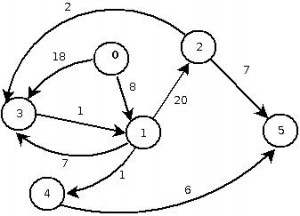
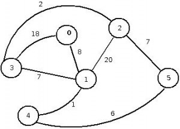
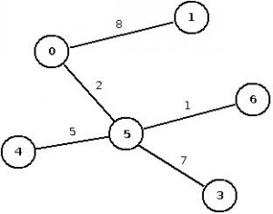
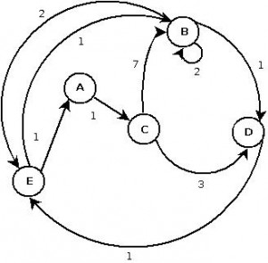
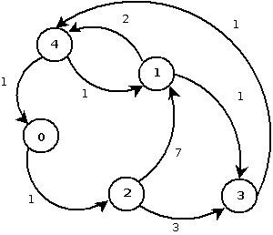
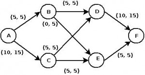
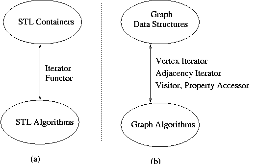
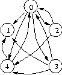

The Boost Graph Library (BGL)
Graphs are mathematical abstractions that are useful for solving many types of problems in computer science. Consequently, these abstractions must also be represented in computer programs. A standardized generic interface for traversing graphs is of utmost importance to encourage reuse of graph algorithms and data structures. Part of the Boost Graph Library is a generic interface that allows access to a graph's structure, but hides the details of the implementation. This is an open interface in the sense that any graph library that implements this interface will be interoperable with the BGL generic algorithms and with other algorithms that also use this interface. The BGL provides some general purpose graph classes that conform to this interface, but they are not meant to be the only graph classes. There certainly will be other graph classes that are better for certain situations. The main contribution of the The BGL is the formulation of this interface.
Generic programming is the methodology that was used in the construction of the Boost Graph Library. To understand the organization and structure of the BGL, the reader needs a good understanding of generic programming.
Genericity in the Boost Graph Library
Just as with STL's genericity, there are three ways in which the BGL is generic.
- Algorithm/Data-Structure Interoperability
-
First, the graph algorithms of the BGL are written to an interface that abstracts away the details of the particular graph data-structure. Like the STL, the BGL uses iterators to define the interface for data-structure traversal. There are three distinct graph traversal patterns: traversal of all vertices in the graph, through all of the edges, and along the adjacency structure of the graph (from a vertex to each of its neighbors). There are separate iterators for each pattern of traversal.
This generic interface allows template functions such as breadth_first_search() to work on a large variety of graph data-structures, from graphs implemented with pointer-linked nodes to graphs encoded in arrays. This flexibility is especially important in the domain of graphs. Graph data-structures are often custom-made for a particular application. Traditionally, if programmers want to reuse an algorithm implementation they must convert/copy their graph data into the graph library's prescribed graph structure, which severely limits the reuse of graph algorithms.
In contrast, custom-made (or even legacy) graph structures can be used as-is with the generic graph algorithms of the BGL, using external adaptation, which consistes of wrapping a new interface around a data-structure without copying and without placing the data inside adaptor objects. The BGL interface was carefully designed to make this adaptation easy.
- Extension through Visitors
-
Second, the graph algorithms of the BGL are extensible. The BGL introduces the notion of a visitor, which is just a function object with multiple methods. In graph algorithms, there are often several key event points at which it is useful to insert user-defined operations. The visitor object has a different method that is invoked at each event point. The particular event points and corresponding visitor methods depend on the particular algorithm. They often include methods like start_vertex(), discover_vertex(), examine_edge(), tree_edge(), and finish_vertex().
- Vertex and Edge Property Multi-Parameterization
-
The third way that the BGL is generic is analogous to the parameterization of the element-type in STL containers, though again the story is a bit more complicated for graphs. We need to associate values (called
properties
) with both the vertices and the edges of the graph. In addition, it will often be necessary to associate multiple properties with each vertex and edge; this is what we mean by multi-parameterization. The STLstd::list<T>class has a parameter T for its element type. Similarly, BGL graph classes have template parameters for vertex and edgeproperties
. A property specifies the parameterized type of the property and also assigns an identifying tag to the property. This tag is used to distinguish between the multiple properties which an edge or vertex may have. A property value that is attached to a particular vertex or edge can be obtained via a property map. There is a separate property map for each property.Traditional graph libraries and graph structures fall down when it comes to the parameterization of graph properties. This is one of the primary reasons that graph data-structures must be custom-built for applications. The parameterization of properties in the BGL graph classes makes them well suited for re-use.
Getting started with the Boost Graph Library
Introduction
Some simple walk-throughs on how to use the Boost Graph Library. I find much of the documentation, both online and printed, to be a bit impenetrable. I am sure I am not alone, so I thought it might be worthwhile to post a few examples of its usage that actually compile and work (for me anyway, let me know if you see any problems) as well as being reasonably up to date.
The Boost Graph Library is a header-only library that requires no separate compilation.
All that is usually required is to set the location of the additional include directories in your integrated development environment (IDE) and you're ready to go. In Microsoft Visual Studio for example, just set the location of the Boost Library path in C/C++ > General > Additional Include Directories.
If you are developing in a Linux-based environment and have already installed Boost, there is good chance you don't need to do anything else.
Shortcuts to examples covered in this boost graph library tutorial are as follows:
- Creating a directed graph
- Creating an undirected graph
- Print edge weights in undirected graphs
- Finding paths using Dijkstra's shortest path algorithm
- Finding minimal spanning trees using Kruskal's algorithm
- DIMACS maximum flow problems
Creating a directed graph
The first thing you probably need to learn coding-wise, is the use of the adjacency list to create the graph edge connections. It's probably worthwhile getting used to making liberal use of typedefs, given that Boost library declarations can end up somewhat lengthy.
To declare an adjacency list for a directed graph for example:
typedef boost::adjacency_list<boost::vecS, boost::vecS, boost::directedS> DirectedGraph;
Suppose we wish to build the following weighted directed graph:
We can do this by making repeated calls to add_edge to create the graph. The following code listing shows you how, and prints out the result:
#include <boost/graph/adjacency_list.hpp>
#include <iostream>
typedef boost::property<boost::edge_weight_t, int> EdgeWeightProperty;
typedef boost::adjacency_list<boost::listS, boost::vecS, boost::directedS, boost::no_property, EdgeWeightProperty > DirectedGraph;
typedef boost::graph_traits<DirectedGraph>::edge_iterator edge_iterator;
int main()
{
DirectedGraph g;
boost::add_edge (0, 1, 8, g);
boost::add_edge (0, 3, 18, g);
boost::add_edge (1, 2, 20, g);
boost::add_edge (2, 3, 2, g);
boost::add_edge (3, 1, 1, g);
boost::add_edge (1, 3, 7, g);
boost::add_edge (1, 4, 1, g);
boost::add_edge (4, 5, 6, g);
boost::add_edge (2, 5, 7, g);
std::pair<edge_iterator, edge_iterator> ei = edges(g);
std::cout << "Number of edges = " << num_edges(g) << "\n";
std::cout << "Edge list:\n";
std::copy( ei.first, ei.second,
std::ostream_iterator<boost::adjacency_list<>::edge_descriptor>{
std::cout, "\n"});
std::cout << std::endl;
return 0;
}
...
Creating an undirected graph
Consider the following undirected graph:
Which we build in a similar way, but this time stipulating the use of the boost::undirectedS property:
#include <boost/graph/adjacency_list.hpp>
#include <iostream>
typedef boost::property<boost::edge_weight_t, int> EdgeWeightProperty;
typedef boost::adjacency_list<boost::listS, boost::vecS,boost::undirectedS,boost::no_property,EdgeWeightProperty> UndirectedGraph;
typedef boost::graph_traits<UndirectedGraph>::edge_iterator edge_iterator;
int main()
{
UndirectedGraph g;
boost::add_edge (0, 1, 8, g);
boost::add_edge (0, 3, 18, g);
boost::add_edge (1, 2, 20, g);
boost::add_edge (2, 3, 2, g);
boost::add_edge (1, 3, 7, g);
boost::add_edge (1, 4, 1, g);
boost::add_edge (4, 5, 6, g);
boost::add_edge (2, 5, 7, g);
std::pair<edge_iterator, edge_iterator> ei = edges(g);
std::cout << "Number of edges = " << num_edges(g) << "\n";
std::cout << "Edge list:\n";
for (edge_iterator it = ei.first; it != ei.second; ++it )
{
std::cout << *it << std::endl;
}
std::cout << std::endl;
return 0;
}
...
Print edge weights in undirected graphs
Consider the following spanning tree:
You may obtain the mapping between edges and their respective weights by using the boost_property_map:
And the full code listing is:
#include <iostream>
#include <boost/graph/graph_traits.hpp>
#include <boost/graph/adjacency_list.hpp>
typedef boost::property<boost::edge_weight_t, double> EdgeWeight;
typedef boost::adjacency_list<boost::listS, boost::vecS, boost::undirectedS, boost::no_property, EdgeWeight> UndirectedGraph;
typedef boost::graph_traits<UndirectedGraph>::edge_iterator edge_iterator;
int main(int, char*[])
{
// 1. Undirected graph - print out the edge weights
UndirectedGraph g;
boost::add_edge(0, 1, 8, g);
boost::add_edge(0, 5, 2, g);
boost::add_edge(5, 6, 1, g);
boost::add_edge(4, 5, 5, g);
boost::add_edge(3, 5, 7, g);
boost::property_map<UndirectedGraph, boost::edge_weight_t>::type EdgeWeightMap = get(boost::edge_weight_t(), g);
std::pair<edge_iterator, edge_iterator> edgePair;
for (edgePair = edges(g); edgePair.first != edgePair.second; ++edgePair.first)
{
std::cout << *edgePair.first << " " << EdgeWeightMap[*edgePair.first] << std::endl;
}
return 0;
}
...
Finding paths using Dijkstra's shortest path algorithm
The same dijkstra-example.cpp as used at the following link: http://www.boost.org/doc/libs/1_55_0/libs/graph/example/dijkstra-example.cpp
Here is the graphical representation of dijkstra-example example graph:
In this demonstration we use the dijkstra_shortest_paths method to obtain not only the shortest path tree, but output the path between a selected source-destination pair as well.
#include <boost/config.hpp>
#include <iostream>
#include <fstream>
#include <boost/graph/graph_traits.hpp>
#include <boost/graph/adjacency_list.hpp>
#include <boost/graph/dijkstra_shortest_paths.hpp>
#include <boost/property_map/property_map.hpp>
int main(int, char *[])
{
typedef boost::adjacency_list <boost::listS, boost::vecS, boost::directedS, boost::no_property,
boost::property<boost::edge_weight_t, int> > graph_t;
typedef boost::graph_traits<graph_t>::vertex_descriptor vertex_descriptor;
typedef std::pair<int, int> Edge;
const int num_nodes = 5;
enum nodes { A, B, C, D, E };
char name[] = "ABCDE";
Edge edge_array[] = { Edge(A, C), Edge(B, B), Edge(B, D), Edge(B, E),
Edge(C, B), Edge(C, D), Edge(D, E), Edge(E, A), Edge(E, B)
};
int weights[] = { 1, 2, 1, 2, 7, 3, 1, 1, 1 };
int num_arcs = sizeof(edge_array) / sizeof(Edge);
// Graph created from the list of edges
graph_t g(edge_array, edge_array + num_arcs, weights, num_nodes);
// Create property_map from edges to weights
boost::property_map<graph_t, boost::edge_weight_t>::type weightmap = get(boost::edge_weight, g);
// Create vectors to store the predecessors (p) and the distances from the root (d)
std::vector<vertex_descriptor> p(num_vertices(g));
std::vector<int> d(num_vertices(g));
// Create descriptor for the source node
vertex_descriptor s = vertex(A, g);
vertex_descriptor goal = vertex(E, g);
// Evaluate Dijkstra on graph g with source s, predecessor_map p and distance_map d
boost::dijkstra_shortest_paths(g, s,
boost::predecessor_map(&p[0]).distance_map(&d[0]));
//p[] is the predecessor map obtained through dijkstra
//name[] is a vector with the names of the vertices
//s and goal are vertex descriptors
std::vector<boost::graph_traits<graph_t>::vertex_descriptor > path;
boost::graph_traits<graph_t>::vertex_descriptor current = goal;
while(current!=s)
{
path.push_back(current);
current = p[current];
}
path.push_back(s);
// Prints the path obtained in reverse
std::cout << "Path from " << name[s] << " to " << name[goal] << std::endl;
std::vector<boost::graph_traits<graph_t>::vertex_descriptor >::reverse_iterator it;
for (it = path.rbegin(); it != path.rend(); ++it) {
std::cout << name[*it] << " ";
}
std::cout << std::endl;
return EXIT_SUCCESS;
}
Finding minimal spanning trees using Kruskal's algorithm
Again I take an original example from the boost.org site (http://www.boost.org/doc/libs/1_55_0/libs/graph/example/kruskal-example.cpp) and make use of it here.
This is the graphical representation of example graph:
I have removee the Boost workarounds (BOOST_MSVC <= 1300 etc) and the outputting to the .dot file just to keep things more concise. I have also removed use of the using boost namespace in my examples, but that's just a personal preference:
#include <boost/graph/adjacency_list.hpp>
#include <boost/graph/kruskal_min_spanning_tree.hpp>
#include <iostream>
#include <fstream>
int main()
{
typedef boost::adjacency_list< boost::vecS, boost::vecS, boost::undirectedS,
boost::no_property, boost::property<boost::edge_weight_t, int> > Graph;
typedef boost::graph_traits <Graph>::edge_descriptor Edge;
typedef boost::graph_traits <Graph>::vertex_descriptor Vertex;
typedef std::pair<int, int> E;
const int num_nodes = 5;
E edge_array[] = { E(0, 2), E(1, 3), E(1, 4), E(2, 1), E(2, 3),
E(3, 4), E(4, 0), E(4, 1)
};
int weights[] = { 1, 1, 2, 7, 3, 1, 1, 1 };
std::size_t num_edges = sizeof(edge_array) / sizeof(E);
Graph g(edge_array, edge_array + num_edges, weights, num_nodes);
boost::property_map<Graph, boost::edge_weight_t >::type weight = get(boost::edge_weight, g);
std::vector < Edge > spanning_tree;
boost::kruskal_minimum_spanning_tree(g, std::back_inserter(spanning_tree));
std::cout << "Print the edges in the MST:" << std::endl;
for (std::vector < Edge >::iterator ei = spanning_tree.begin();
ei != spanning_tree.end(); ++ei)
{
std::cout << source(*ei, g)
<< " <--> "
<< target(*ei, g)
<< " with weight of "
<< weight[*ei]
<< std::endl;
}
return 0;
}
...
DIMACS maximum flow problems
DIMACS (Center for Discrete Mathematics and Theoretical Computer Science has formulated 'challenges' for problems involving network flows. See this link for more information: http://lpsolve.sourceforge.net/5.5/DIMACS_maxf.htm
The problem is to find the maximum possible flow from a given source node to a given sink node. Possible applications include finding the maximum flow of orders through a job shop, the maximum flow of water through a storm sewer system, and the maximum flow of product through a product distribution system.
Example DIMACS file:
c This is a simple example file to demonstrate the DIMACS c input file format for maximum flow problems. The solution c vector is [5,10,5,0,5,5,10,5] with cost at 15. c Problem line (nodes, links) p max 6 8 c source n 1 s c sink n 6 t c Arc descriptor lines (from, to, capacity) a 1 2 5 a 1 3 15 a 2 4 5 a 2 5 5 a 3 4 5 a 3 5 5 a 4 6 15 a 5 6 5 c c End of file
The lines beginning with c
are comment lines. The problem line begins with the letter p
and represents the problem designation (max, min etc), the number of edges (8) and the number of vertices (6). Lines beginning with n
are the node descriptors – node ID and whether the node is a source (s
) or a sink (t
). Finally the a
lines are descriptors giving the node interconnections and their weights.
The following graphical representation of the example network flow problem, shows not only the network interconnections and capacities but the flows on the links as well:
Code listing as applied to this problem (you have to supply it your sample DICOM file as described previously):
#include <boost/config.hpp>
#include <iostream>
#include <fstream>
#include <string>
#include <boost/graph/edmonds_karp_max_flow.hpp>
#include <boost/graph/adjacency_list.hpp>
#include <boost/graph/read_dimacs.hpp>
#include <boost/graph/graph_utility.hpp>
int main()
{
typedef boost::adjacency_list_traits<boost::vecS, boost::vecS, boost::directedS > Traits;
typedef boost::adjacency_list<boost::listS, boost::vecS, boost::directedS,
boost::property<boost::vertex_name_t, std::string >,
boost::property<boost::edge_capacity_t, long,
boost::property<boost::edge_residual_capacity_t, long,
boost::property<boost::edge_reverse_t, Traits::edge_descriptor>>>> Graph;
Graph g;
boost::property_map<Graph, boost::edge_capacity_t>::type
capacity = get(boost::edge_capacity, g);
boost::property_map<Graph, boost::edge_reverse_t>::type rev = get(boost::edge_reverse, g);
boost::property_map<Graph, boost::edge_residual_capacity_t>::type
residual_capacity = get(boost::edge_residual_capacity, g);
Traits::vertex_descriptor s, t;
// Use a DIMACS network flow file as stdin:
std::ifstream is ("dimacs.txt", std::ios::in);
read_dimacs_max_flow(g, capacity, rev, s, t, is);
#if defined(BOOST_MSVC) && BOOST_MSVC <= 1300
std::vector<default_color_type> color(num_vertices(g));
std::vector<Traits::edge_descriptor> pred(num_vertices(g));
long flow = edmunds_karp_max_flow
(g, s, t, capacity, residual_capacity, rev, &color[0], &pred[0]);
#else
long flow = edmonds_karp_max_flow(g, s, t);
#endif
std::cout << "c The total flow:" << std::endl;
std::cout << "s " << flow << std::endl << std::endl;
std::cout << "c flow values:" << std::endl;
boost::graph_traits<Graph>::vertex_iterator u_iter, u_end;
boost::graph_traits<Graph>::out_edge_iterator ei, e_end;
for (boost::tie(u_iter, u_end) = vertices(g); u_iter != u_end; ++u_iter)
for (boost::tie(ei, e_end) = out_edges(*u_iter, g); ei != e_end; ++ei)
if (capacity[*ei] > 0)
std::cout << "f " << *u_iter << " " << target(*ei, g) << " "
<< (capacity[*ei] - residual_capacity[*ei])
<< std::endl;
return EXIT_SUCCESS;
}
As anticipated the solution vector of the output variables is [5, 10, 5, 0, 5, 5, 10, 5].
Example DIMACS file “dimacs.txt” downloadable from here: http://www.technical-recipes.com/Downloads/dimacs.txt
A Quick Tour of the Boost Graph Library
The domain of graph data structures and algorithms is in some respects more complicated than that of containers. The abstract iterator interface used by STL is not sufficiently rich to encompass the numerous ways that graph algorithms may traverse a graph. Instead, we formulate an abstract interface that serves the same purpose for graphs that iterators do for basic containers (though iterators still play a large role). The figure below depicts the analogy between the STL and the BGL.
The graph abstraction consists of a set of vertices (or nodes), and a set of edges (or arcs) that connect the vertices. The next figure depicts a directed graph with five vertices (labeled 0 through 4) and 11 edges. The edges leaving a vertex are called the out-edges of the vertex. The edges {(0,1),(0,2),(0,3),(0,4)} are all out-edges of vertex 0. The edges entering a vertex are called the in-edges of the vertex. The edges {(0,4),(2,4),(3,4)} are all in-edges of vertex 4.
In the following sections we will use the BGL to construct this example graph and manipulate it in various ways. The complete source code for this example can be found as BGL_quick_tour.cpp. Each of the following sections discusses a slice of this example file. Excerpts from the output of the example program will also be listed.
//=======================================================================
// Copyright 1997, 1998, 1999, 2000 University of Notre Dame.
// Authors: Andrew Lumsdaine, Lie-Quan Lee, Jeremy G. Siek
//
// Distributed under the Boost Software License, Version 1.0. (See
// accompanying file LICENSE_1_0.txt or copy at
// http://www.boost.org/LICENSE_1_0.txt)
//=======================================================================
#include <boost/config.hpp>
#include <iostream> // for std::cout
#include <utility> // for std::pair
#include <algorithm> // for std::for_each
#include <boost/utility.hpp> // for boost::tie
#include <boost/graph/adjacency_list.hpp>
#include <boost/graph/graphviz.hpp>
using namespace boost;
template <class Graph> struct exercise_vertex {
exercise_vertex(Graph& g_, const char name_[]) : g(g_),name(name_) { }
typedef typename graph_traits<Graph>::vertex_descriptor Vertex;
void operator()(const Vertex& v) const
{
using namespace boost;
typename property_map<Graph, vertex_index_t>::type
vertex_id = get(vertex_index, g);
std::cout << "vertex: " << name[get(vertex_id, v)] << std::endl;
// Write out the outgoing edges
std::cout << "\tout-edges: ";
typename graph_traits<Graph>::out_edge_iterator out_i, out_end;
typename graph_traits<Graph>::edge_descriptor e;
for (boost::tie(out_i, out_end) = out_edges(v, g);
out_i != out_end; ++out_i)
{
e = *out_i;
Vertex src = source(e, g), targ = target(e, g);
std::cout << "(" << name[get(vertex_id, src)]
<< "," << name[get(vertex_id, targ)] << ") ";
}
std::cout << std::endl;
// Write out the incoming edges
std::cout << "\tin-edges: ";
typename graph_traits<Graph>::in_edge_iterator in_i, in_end;
for (boost::tie(in_i, in_end) = in_edges(v, g); in_i != in_end; ++in_i)
{
e = *in_i;
Vertex src = source(e, g), targ = target(e, g);
std::cout << "(" << name[get(vertex_id, src)]
<< "," << name[get(vertex_id, targ)] << ") ";
}
std::cout << std::endl;
// Write out all adjacent vertices
std::cout << "\tadjacent vertices: ";
typename graph_traits<Graph>::adjacency_iterator ai, ai_end;
for (boost::tie(ai,ai_end) = adjacent_vertices(v, g); ai != ai_end; ++ai)
std::cout << name[get(vertex_id, *ai)] << " ";
std::cout << std::endl;
}
Graph& g;
const char *name;
};
int main(int,char*[])
{
// create a typedef for the Graph type
typedef adjacency_list<vecS, vecS, bidirectionalS,
no_property, property<edge_weight_t, float> > Graph;
// Make convenient labels for the vertices
enum { A, B, C, D, E, N };
const int num_vertices = N;
const char name[] = "ABCDE";
// writing out the edges in the graph
typedef std::pair<int,int> Edge;
Edge edge_array[] =
{ Edge(A,B), Edge(A,D), Edge(C,A), Edge(D,C),
Edge(C,E), Edge(B,D), Edge(D,E), };
const int num_edges = sizeof(edge_array)/sizeof(edge_array[0]);
// average transmission delay (in milliseconds) for each connection
float transmission_delay[] = { 1.2, 4.5, 2.6, 0.4, 5.2, 1.8, 3.3, 9.1 };
// declare a graph object, adding the edges and edge properties
#if defined(BOOST_MSVC) && BOOST_MSVC <= 1300
// VC++ can't handle the iterator constructor
Graph g(num_vertices);
property_map<Graph, edge_weight_t>::type weightmap = get(edge_weight, g);
for (std::size_t j = 0; j < num_edges; ++j) {
graph_traits<Graph>::edge_descriptor e; bool inserted;
boost::tie(e, inserted) = add_edge(edge_array[j].first, edge_array[j].second, g);
weightmap[e] = transmission_delay[j];
}
#else
Graph g(edge_array, edge_array + num_edges,
transmission_delay, num_vertices);
#endif
boost::property_map<Graph, vertex_index_t>::type
vertex_id = get(vertex_index, g);
boost::property_map<Graph, edge_weight_t>::type
trans_delay = get(edge_weight, g);
std::cout << "vertices(g) = ";
typedef graph_traits<Graph>::vertex_iterator vertex_iter;
std::pair<vertex_iter, vertex_iter> vp;
for (vp = vertices(g); vp.first != vp.second; ++vp.first)
std::cout << name[get(vertex_id, *vp.first)] << " ";
std::cout << std::endl;
std::cout << "edges(g) = ";
graph_traits<Graph>::edge_iterator ei, ei_end;
for (boost::tie(ei,ei_end) = edges(g); ei != ei_end; ++ei)
std::cout << "(" << name[get(vertex_id, source(*ei, g))]
<< "," << name[get(vertex_id, target(*ei, g))] << ") ";
std::cout << std::endl;
std::for_each(vertices(g).first, vertices(g).second,
exercise_vertex<Graph>(g, name));
std::map<std::string,std::string> graph_attr, vertex_attr, edge_attr;
graph_attr["size"] = "3,3";
graph_attr["rankdir"] = "LR";
graph_attr["ratio"] = "fill";
vertex_attr["shape"] = "circle";
boost::write_graphviz(std::cout, g,
make_label_writer(name),
make_label_writer(trans_delay),
make_graph_attributes_writer(graph_attr, vertex_attr,
edge_attr));
return 0;
}
Constructing a Graph
In this example we will use the BGL adjacency_list class to demonstrate the main ideas in the BGL interface. The adjacency_list class provides a generalized version of the classic adjacency list data structure. The adjacency_list is a template class with six template parameters, though here we only fill in the first three parameters and use the defaults for the remaining three. The first two template arguments (vecS, vecS) determine the data structure used to represent the out-edges for each vertex in the graph and the data structure used to represent the graph's vertex set (see section Choosing the Edgelist and VertexList for information about the tradeoffs of the different data structures).
The third argument, bidirectionalS, selects a directed graph that provides access to both out and in-edges. The other options for the third argument are directedS which selects a directed graph with only out-edges, and undirectedS which selects an undirected graph.
Once we have the graph type selected, we can create the graph in the figure by declaring a graph object and filling in edges using the add_edge() function of the MutableGraph interface (which adjacency_list implements). We use the array of pairs edge_array merely as a convenient way to explicitly create the edges for this example.
#include <iostream> // for std::cout
#include <utility> // for std::pair
#include <algorithm> // for std::for_each
#include <boost/graph/graph_traits.hpp>
#include <boost/graph/adjacency_list.hpp>
#include <boost/graph/dijkstra_shortest_paths.hpp>
using namespace boost;
int main(int,char*[])
{
// create a typedef for the Graph type
typedef adjacency_list<vecS, vecS, bidirectionalS> Graph;
// Make convenient labels for the vertices
enum { A, B, C, D, E, N };
const int num_vertices = N;
const char* name = "ABCDE";
// writing out the edges in the graph
typedef std::pair<int, int> Edge;
Edge edge_array[] =
{ Edge(A,B), Edge(A,D), Edge(C,A), Edge(D,C),
Edge(C,E), Edge(B,D), Edge(D,E)
};
const int num_edges = sizeof(edge_array)/sizeof(edge_array[0]);
// declare a graph object
Graph g(num_vertices);
// add the edges to the graph object
for (int i = 0; i < num_edges; ++i)
add_edge(edge_array[i].first, edge_array[i].second, g);
...
return 0;
}
Instead of calling the add_edge() function for each edge, we could use the edge iterator constructor of the graph. This is typically more efficient than using add_edge(). Pointers to the edge_array can be viewed as iterators, so we can call the iterator constructor by passing pointers to the beginning and end of the array.
Graph g(edge_array, edge_array + sizeof(edge_array) / sizeof(Edge), num_vertices);
Instead of creating a graph with a certain number of vertices to begin with, it is also possible to add and remove vertices with the add_vertex() and remove_vertex() functions, also of the MutableGraph interface.
Accessing the Vertex Set
Now that we have created a graph, we can use the graph interface to access the graph data in different ways. First we can access all of the vertices in the graph using the vertices() function of the VertexListGraph interface. This function returns a std::pair of vertex iterators (the first iterator points to the beginning of the vertices and the second iterator points past the end). Dereferencing a vertex iterator gives a vertex object. The type of the vertex iterator is given by the graph_traits class. Note that different graph classes can have different associated vertex iterator types, which is why we need the graph_traits class. Given some graph type, the graph_traits class will provide access to the vertex_iterator type.
The following example prints out the index for each of the vertices in the graph. All vertex and edge properties, including index, are accessed via property map objects. The property_map class is used to obtain the property map type for a specific property (specified by vertex_index_t, one of the BGL predefined properties) and function call get(vertex_index, g) returns the actual property map object.
// ...
int main(int,char*[])
{
// ...
typedef graph_traits<Graph>::vertex_descriptor Vertex;
// get the property map for vertex indices
typedef property_map<Graph, vertex_index_t>::type IndexMap;
IndexMap index = get(vertex_index, g);
std::cout << "vertices(g) = ";
typedef graph_traits<Graph>::vertex_iterator vertex_iter;
std::pair<vertex_iter, vertex_iter> vp;
for (vp = vertices(g); vp.first != vp.second; ++vp.first) {
Vertex v = *vp.first;
std::cout << index[v] << " ";
}
std::cout << std::endl;
// ...
return 0;
}
The output is:
vertices(g) = 0 1 2 3 4
Accessing the Edge Set
The set of edges for a graph can be accessed with the edges() function of the EdgeListGraph interface. Similar to the vertices() function, this returns a pair of iterators, but in this case the iterators are edge iterators. Dereferencing an edge iterator gives an edge object. The source() and target() functions return the two vertices that are connected by the edge. Instead of explicitly creating a std::pair for the iterators, this time we will use the tie() helper function. This handy function can be used to assign the parts of a std::pair into two separate variables, in this case ei and ei_end. This is usually more convenient than creating a std::pair and is our method of choice for the BGL
std::tie for an STL replacement.// ...
int main(int,char*[])
{
// ...
std::cout << "edges(g) = ";
graph_traits<Graph>::edge_iterator ei, ei_end;
for (tie(ei, ei_end) = edges(g); ei != ei_end; ++ei)
std::cout << "(" << index[source(*ei, g)]
<< "," << index[target(*ei, g)] << ") ";
std::cout << std::endl;
// ...
return 0;
}
The output is:
edges(g) = (0,1) (0,3) (2,0) (3,2) (2,4) (1,3) (3,4)
The Adjacency Structure
In the next few examples we will explore the adjacency structure of the graph from the point of view of a particular vertex. We will look at the vertices' in-edges, out-edges, and its adjacent vertices. We will encapsulate this in an exercise_vertex function, and apply it to each vertex in the graph. To demonstrate the STL-interoperability of BGL, we will use the STL for_each() function to iterate through the vertices and apply the function.
//...
int main(int,char*[])
{
//...
std::for_each(vertices(g).first, vertices(g).second,
exercise_vertex<Graph>(g));
return 0;
}
We use a functor for exercise_vertex instead of just a function because the graph object will be needed when we access information about each vertex; using a functor gives us a place to keep a reference to the graph object during the execution of the std::for_each(). Also we template the functor on the graph type so that it is reusable with different graph classes. Here is the start of the exercise_vertex functor:
template <class Graph> struct exercise_vertex {
exercise_vertex(Graph& g_) : g(g_) {}
//...
Graph& g;
};
Vertex Descriptors
The first thing we need to know in order to write the operator() method of the functor is the type for the vertex objects of the graph. The vertex type will be the parameter to the operator() method. To be precise, we do not deal with actual vertex objects, but rather with vertex descriptors. Many graph representations (such as adjacency lists) do not store actual vertex objects, while others do (e.g., pointer-linked graphs). This difference is hidden underneath the black-box
of the vertex descriptor object. The vertex descriptor is something provided by each graph type that can be used to access information about the graph via the out_edges(), in_edges(), adjacent_vertices(), and property map functions that are described in the following sections. The vertex_descriptor type is obtained through the graph_traits class. The typename keyword used below is necessary because the type on the left hand side of the scope :: operator (the graph_traits<Graph> type) is dependent on a template parameter (the Graph type). Here is how we define the functor's apply method:
template <class Graph> struct exercise_vertex {
//...
typedef typename graph_traits<Graph>::vertex_descriptor Vertex;
void operator()(const Vertex& v) const
{
//...
}
//...
};
Out-Edges, In-Edges, and Edge Descriptors
The out-edges of a vertex are accessed with the out_edges() function of the IncidenceGraph interface. The out_edges() function takes two arguments: the first argument is the vertex and the second is the graph object. The function returns a pair of iterators which provide access to all of the out-edges of a vertex (similar to how the vertices() function returned a pair of iterators). The iterators are called out-edge iterators and dereferencing one of these iterators gives an edge descriptor object. An edge descriptor plays the same kind of role as the vertex descriptor object, it is a black box
provided by the graph type. The following code snippet prints the source-target pairs for each out-edge of vertex v.
template <class Graph> struct exercise_vertex {
//...
void operator()(const Vertex& v) const
{
typedef graph_traits<Graph> GraphTraits;
typename property_map<Graph, vertex_index_t>::type
index = get(vertex_index, g);
std::cout << "out-edges: ";
typename GraphTraits::out_edge_iterator out_i, out_end;
typename GraphTraits::edge_descriptor e;
for (tie(out_i, out_end) = out_edges(v, g);
out_i != out_end; ++out_i) {
e = *out_i;
Vertex src = source(e, g), targ = target(e, g);
std::cout << "(" << index[src] << ","
<< index[targ] << ") ";
}
std::cout << std::endl;
//...
}
//...
};
For vertex 0 the output is:
out-edges: (0,1) (0,2) (0,3) (0,4)
The in_edges() function of the BidirectionalGraph interface provides access to all the in-edges of a vertex through in-edge iterators. The in_edges() function is only available for the adjacency_list if bidirectionalS is supplied for the Directed template parameter. There is an extra cost in space when bidirectionalS is specified instead of directedS.
template <class Graph> struct exercise_vertex {
//...
void operator()(const Vertex& v) const
{
//...
std::cout << "in-edges: ";
typedef typename graph_traits<Graph> GraphTraits;
typename GraphTraits::in_edge_iterator in_i, in_end;
for (tie(in_i, in_end) = in_edges(v,g);
in_i != in_end; ++in_i) {
e = *in_i;
Vertex src = source(e, g), targ = target(e, g);
std::cout << "(" << index[src] << "," << index[targ] << ") ";
}
std::cout << std::endl;
//...
}
//...
};
For vertex 0 the output is:
in-edges: (2,0) (3,0) (4,0)
Adjacent Vertices
Given the out-edges of a vertex, the target vertices of these edges are adjacent to the source vertex. Sometimes an algorithm does not need to look at the edges of the graph and only cares about the vertices. Therefore the graph interface also includes the adjacent_vertices() function of the AdjacencyGraph interface which provides direct access to the adjacent vertices. This function returns a pair of adjacency iterators. Dereferencing an adjacency iterator gives a vertex descriptor for an adjacent vertex.
template <class Graph> struct exercise_vertex {
//...
void operator()(Vertex v) const
{
//...
std::cout << "adjacent vertices: ";
typename graph_traits<Graph>::adjacency_iterator ai;
typename graph_traits<Graph>::adjacency_iterator ai_end;
for (tie(ai, ai_end) = adjacent_vertices(v, g);
ai != ai_end; ++ai)
std::cout << index[*ai] << " ";
std::cout << std::endl;
}
//...
};
For vertex 4 the output is:
adjacent vertices: 0 1
Adding Some Color to your Graph
BGL attempts to be as flexible as possible in terms of accommodating how properties are attached to a graph. For instance, a property such as edge weight may need to be used throughout a graph object's lifespan and therefore it would be convenient to have the graph object also manage the property storage. On the other hand, a property like vertex color may only be needed for the duration of a single algorithm, and it would be better to have the property stored separately from the graph object. The first kind of property is called an internally stored property while the second kind is called an externally stored property. BGL uses a uniform mechanism to access both kinds of properties inside its graph algorithms called the property map interface, described in Property Map Concepts. In addition, the PropertyGraph concept defines the interface for obtaining a property map object for an internally stored property.
The BGL adjacency_list class allows users to specify internally stored properties through plug-in template parameters of the graph class. How to do this is discussed in detail in Internal Properties. Externally stored properties can be created in many different ways, although they are ultimately passed as separate arguments to the graph algorithms. One straightforward way to store properties is to create an array indexed by vertex or edge index. In the adjacency_list with vecS specified for the VertexList template parameter, vertices are automatically assigned indices, which can be accessed via the property map for the vertex_index_t. Edges are not automatically assigned indices. However the property mechanism can be used to attach indices to the edges which can be used to index into other externally stored properties.
In the following example, we construct a graph and apply dijkstra_shortest_paths(). The complete source code for the example is in examples/dijkstra-example.cpp. Dijkstra's algorithm computes the shortest distance from the starting vertex to every other vertex in the graph.
Dijkstra's algorithm requires that a weight property is associated with each edge and a distance property with each vertex. Here we use an internal property for the weight and an external property for the distance. For the weight property we use the property class and specify int as the type used to represent weight values and edge_weight_t for the property tag (which is one of the BGL predefined property tags). The weight property is then used as a template argument for adjacency_list.
The listS and vecS types are selectors that determine the data structure used inside the adjacency_list (see Choosing the Edgelist and VertexList). The directedS type specifies that the graph should be directed (versus undirected). The following code shows the specification of the graph type and then the initialization of the graph. The edges and weights are passed to the graph constructor in the form of iterators (a pointer qualifies as a RandomAccessIterator)
typedef adjacency_list<listS, vecS, directedS,
no_property, property<edge_weight_t, int> > Graph;
typedef graph_traits<Graph>::vertex_descriptor Vertex;
typedef std::pair<int,int> E;
const int num_nodes = 5;
E edges[] = { E(0,2),
E(1,1), E(1,3), E(1,4),
E(2,1), E(2,3),
E(3,4),
E(4,0), E(4,1) };
int weights[] = { 1, 2, 1, 2, 7, 3, 1, 1, 1};
Graph G(edges, edges + sizeof(edges) / sizeof(E), weights, num_nodes);
For the external distance property we will use a std::vector for storage. BGL algorithms treat random access iterators as property maps, so we can just pass the beginning iterator of the distance vector to Dijkstra's algorithm. Continuing the above example, the following code shows the creation of the distance vector, the call to Dijkstra's algorithm (implicitly using the internal edge weight property), and then the output of the results.
// vector for storing distance property
std::vector<int> d(num_vertices(G));
// get the first vertex
Vertex s = *(vertices(G).first);
// invoke variant 2 of Dijkstra's algorithm
dijkstra_shortest_paths(G, s, distance_map(&d[0]));
std::cout << "distances from start vertex:" << std::endl;
graph_traits<Graph>::vertex_iterator vi;
for(vi = vertices(G).first; vi != vertices(G).second; ++vi)
std::cout << "distance(" << index(*vi) << ") = "
<< d[*vi] << std::endl;
std::cout << std::endl;
The output being:
distances from start vertex: distance(0) = 0 distance(1) = 6 distance(2) = 1 distance(3) = 4 distance(4) = 5
Extending Algorithms with Visitors
Often times an algorithm in a library almost does what you need, but not quite. For example, in the previous section we used Dijkstra's algorithm to calculate the shortest distances to each vertex, but perhaps we also wanted to record the tree of shortest paths. One way to do this is to record the predecessor (parent) for each node in the shortest-paths tree.
It would be nice if we could avoid rewriting Dijkstra's algorithm, and just add that little bit extra needed to record the predecessors. In the STL, this kind of extensibility is provided by functors, which are optional parameters to each algorithm. In the BGL this role is fulfilled by visitors.
A visitor is like a functor, but instead of having just one apply
method, it has several. Each of these methods get invoked at certain well-defined points within the algorithm. The visitor methods are explained in detail in Visitor Concepts. The BGL provides a number of visitors for some common tasks including a predecessor recording visitor. The user is encouraged to write his or her own visitors as a way of extending the BGL. Here we will take a quick look at the implementation and use of the predecessor recorder. Since we will be using the dijkstra_shortest_paths() algorithm, the visitor we create must be a Dijkstra Visitor.
The functionality of the record_predecessors visitor is separated into two parts. For the storage and access of the predecessor property, we will use a property map. The predecessor visitor will then only be responsible for what parent to record. To implement this, we create a record_predecessors class and template it on the predecessor property map PredecessorMap. Since this visitor will only be filling in one of the visitor methods, we will inherit from dijkstra_visitor, which will provide empty methods for the rest. The constructor of the predecessor_recorder will take the property map object and save it away in a data member.
template <class PredecessorMap>
class record_predecessors : public dijkstra_visitor<>
{
public:
record_predecessors(PredecessorMap p)
: m_predecessor(p) { }
template <class Edge, class Graph>
void edge_relaxed(Edge e, Graph& g) {
// set the parent of the target(e) to source(e)
put(m_predecessor, target(e, g), source(e, g));
}
protected:
PredecessorMap m_predecessor;
};
The job of recording the predecessors is quite simple. When Dijkstra's algorithm relaxes an edge (potentially adding it to the shortest-paths tree) we record the source vertex as the predecessor of the target vertex. Later, if the edge is relaxed again the predecessor property will be overwritten by the new predecessor. Here we use the put() function associated with the property map to record the predecessor. The edge_filter of the visitor tells the algorithm when to invoke the explore() method. In this case we only want to be notified about edges in the shortest-paths tree so we specify tree_edge_tag.
As a finishing touch, we create a helper function to make it more convenient to create predecessor visitors. All BGL visitors have a helper function like this.
template <class PredecessorMap>
record_predecessors<PredecessorMap>
make_predecessor_recorder(PredecessorMap p) {
return record_predecessors<PredecessorMap>(p);
}
We are now ready to use the record_predecessors in Dijkstra's algorithm. Luckily, BGL's Dijkstra's algorithm is already equipped to handle visitors, so we just pass in our new visitor. In this example we only need to use one visitor, but the BGL is also equipped to handle the use of multiple visitors in the same algorithm (see Visitor ConceptsVisitor Concepts).
using std::vector;
using std::cout;
using std::endl;
vector<Vertex> p(num_vertices(G), graph_traits<G>::null_vertex()); //the predecessor array
dijkstra_shortest_paths(G, s, distance_map(&d[0]).
visitor(make_predecessor_recorder(&p[0])));
cout << "parents in the tree of shortest paths:" << endl;
for(vi = vertices(G).first; vi != vertices(G).second; ++vi) {
cout << "parent(" << *vi;
if (p[*vi] == graph_traits<G>::null_vertex())
cout << ") = no parent" << endl;
else
cout << ") = " << p[*vi] << endl;
}
The output is:
parents in the tree of shortest paths: parent(0) = no parent parent(1) = 4 parent(2) = 0 parent(3) = 2 parent(4) = 3
A Beginner's Introduction to the Boost Graph Library
Which Graph Class To Use
There are several BGL graph classes from which to choose. Since BGL algorithms are generic, they can also be used with any conforming user-defined graph class, but in this section we will restrict our discussion to BGL graph classes.
The principle BGL graph classes are the adjacency_list and adjacency_matrix classes. The adjacency list class is a good choice for most situations, particularly for representing sparse graphs. The file-dependencies graph has only a few edges per vertex, so it is sparse. The adjacency matrix class is a good choice for representing dense graphs, but a very bad choice for sparse graphs, unless a sparse matrix is used.
In this introductory section we shall be using the adjacency_list class exclusively. However, most of what is presented here will also apply directly to the adjacency_matrix class because its interface is almost identical to that of the adjacency_list.
Here we use the same variant of adjacency list as was used in §1.4.1.
typedef adjacency list<
listS, // Store out-edges of each vertex in a std::list
vecS, // Store vertex set in a std::vector
directedS // The file dependency graph is directed
> file_dep_graph; // for file dependency graph, as introduced elsewhere
Constructing a Graph Using Edge Iterators
we have shown how the add_vertex() and add_edge() functions can be used to create a graph. Those functions add vertices and edges one at a time, but in many cases one would like to add them all at once. To meet this need the adjacency_list graph class has a constructor that takes two iterators that define a range of edges. The edge iterators can be any InputIterator that dereference to a std::pair of integers (i, j) that represent an edge in the graph. The two integers i and j represent vertices where 0 ≤ i < |V | and 0 ≤ j < |V |. The n and m parameters say how many vertices and edges will be in the graph. These parameters are optional, but providing them improves the speed of graph construction. The graph properties parameter p is attached to the graph object. The function prototype for the constructor that uses edge iterators is as follows:
template <var class='type'name EdgeIterator>
adjacency list(EdgeIterator first, EdgeIterator last,
vertices_size_type n = 0, edges_size_type m = 0,
const GraphProperties& p = GraphProperties())
The following code demonstrates the use of the edge iterator constructor to create a graph. The std::istream iterator is used to make an input iterator that reads the edges in from the file. The file contains the number of vertices in the graph, followed by pairs of numbers that specify the edges. The second default-constructed input iterator is a placeholder for the end of the input. The std::istream iterator is passed directly into the constructor for the graph.
std::ifstream file_in("makefile-dependencies.dat");
typedef graph_traits<file_dep_graph>::vertices_size_type size_type;
size_type n_vertices;
file_in >> n_vertices; // read in number of vertices
std::istream iterator<std::pair<size_type, size_type> > input_begin(file_in), input_end;
file_dep_graph g(input_begin, input_end, n_vertices);
Since the value type of the std::istream iterator is std::pair, an input operator needs to be defined for std::pair.
namespace std {
template <var class='type'name T>
std::istream& operator>>(std::istream& in, std::pair<T,T>& p) {
in >> p.first >> p.second;
return in;
}
}
Compilation Order
The first question that we address is that of specifying an order in which to build all of the targets. The primary consideration here is ensuring that before building a given target, all the targets that it depends on are already built.
Graph Interfaces
We shall describe the base Graph interface and its refinements.
The Base Graph Interface
The Graph concept contains a few requirements that are common to all the graph concepts. These include some associated types for vertex_descriptor, edge_descriptor, etc. One should note that a model of Graph is not required to be a model of Assignable, so algorithms should pass graph objects by reference.
Notation
G A type that is a model of Graph.
g An object of type G.
Associated Types
boost::graph_traits<G>::vertex_descriptor
- A vertex descriptor corresponds to a unique vertex in an abstract graph instance. A vertex descriptor must be Default Constructible, Assignable, and Equality Comparable.
boost::graph_traits<G>::edge_descriptor
- An edge descriptor corresponds to a unique edge (u,v) in a graph. An edge descriptor must be Default Constructible, Assignable, and Equality Comparable.
boost::graph_traits<G>::directed_category
- The choices are directed_tag and undirected_tag.
boost::graph_traits<G>::edge_parallel_category
- This describes whether the graph class allows the insertion of parallel edges (edges with the same source and target). The two tags are allow_parallel_edge_tag and disallow_parallel_edge_tag.
boost::graph_traits<G>::traversal_category
- This describes the ways in which the vertices and edges of the graph can be visited. The choices are incidence_graph_tag, adjacency_graph_tag, bidirectional_graph_tag, vertex_list_graph_tag, edge_list_graph_tag, and adjacency_matrix_tag.
Valid Expressions
boost::graph_traits<G>::null_vertex()
- Returns a special vertex_descriptor object which does not refer to any vertex of graph object which type is G.
Concept Checking Class
template <class G>
struct GraphConcept
{
typedef typename boost::graph_traits<G>::vertex_descriptor vertex_descriptor;
typedef typename boost::graph_traits<G>::edge_descriptor edge_descriptor;
typedef typename boost::graph_traits<G>::directed_category directed_category;
typedef typename boost::graph_traits<G>::edge_parallel_category edge_parallel_category;
typedef typename boost::graph_traits<G>::traversal_category traversal_category;
void constraints() {
function_requires< DefaultConstructibleConcept<vertex_descriptor> >();
function_requires< EqualityComparableConcept<vertex_descriptor> >();
function_requires< AssignableConcept<vertex_descriptor> >();
function_requires< DefaultConstructibleConcept<edge_descriptor> >();
function_requires< EqualityComparableConcept<edge_descriptor> >();
function_requires< AssignableConcept<edge_descriptor> >();
}
G g;
};
Refinements of the Graph Interface
The refinements of the graph are:
IncidenceGraph-
The IncidenceGraph concept provides an interface for efficient access to the out-edges of each vertex in the graph.
The IncidenceGraphinterface is further refined byBidirectionalGraph. BidirectionalGraph-
The BidirectionalGraph concept refines
IncidenceGraphand adds the requirement for efficient access to the in-edges of each vertex. AdjacencyGraph-
The AdjacencyGraph concept provides and interface for efficient access of the adjacent vertices to a vertex in a graph. This is quite similar to the
IncidenceGraphconcept (the target of an out-edge is an adjacent vertex), though... EdgeListGraph-
The EdgeListGraph concept refines the Graph concept, and adds the requirement for efficient access to all the edges in the graph.
AdjacencyMatrix-
The AdjacencyMatrix concept refines Graph concept and adds the requirement for efficient access to any edge in the graph given the source and target vertices.
VertexListGraph-
The VertexListGraph concept refines the Graph concept, and adds the requirement for efficient traversal of all the vertices in the graph.
The IncidenceGraph Interface
The IncidenceGraph concept provides an interface for efficient access to the out-edges of each vertex in the graph.
Its associated types:
boost::graph_traits<G>::traversal_category- This tag type must be convertible to incidence_graph_tag.
boost::graph_traits<G>::out_edge_iterator- An out-edge iterator for a vertex v provides access to the out-edges of the vertex. As such, the value type of an out-edge iterator is the edge descriptor type of its graph. An out-edge iterator must meet the requirements of MultiPassInputIterator.
boost::graph_traits<G>::degree_size_type- The unsigned integral type used for representing the number out-edges or incident edges of a vertex.
Valid expressions (global functions) are:
source(e, g)-
Returns the vertex descriptor for u of the edge (u,v) represented by e.
Return type: vertex_descriptor
target(e, g)-
Returns the vertex descriptor for v of the edge (u,v) represented by e.
Return type: vertex_descriptor
out_edges(u, g)-
Returns an iterator-range providing access to the out-edges (for directed graphs) or incident edges (for undirected graphs) of vertex u in graph g. The source vertex of an edge obtained via an out edge iterator is guaranteed (for both directed and undirected graphs) to be the vertex u used in the call to out_edges(u, g) and the target vertex must be a vertex adjacent to u.
Return type:
std::pair<out_edge_iterator, out_edge_iterator> out_degree(u, g)-
Returns the number of out-edges (for directed graphs) or the number of incident edges (for undirected graphs) of vertex u in graph g.
Return type: degree_size_type
The BidirectionalGraph Interface
The BidirectionalGraph concept refines IncidenceGraph and adds the requirement for efficient access to the in-edges of each vertex. This concept is separated from IncidenceGraph because for directed graphs efficient access to in-edges typically requires more storage space, and many algorithms do not require access to in-edges. For undirected graphs this is not an issue, since the in_edges() and out_edges() functions are the same, they both return the edges incident to the vertex.
Its associated types:
boost::graph_traits<G>::traversal_category- This tag type must be convertible to bidirectional_graph_tag.
boost::graph_traits<G>::in_edge_iterator- An in-edge iterator for a vertex v provides access to the in-edges of v. As such, the value type of an in-edge iterator is the edge descriptor type of its graph. An in-edge iterator must meet the requirements of MultiPassInputIterator.
Valid expressions (global functions) are:
in_edges(v, g)-
Returns an iterator-range providing access to the in-edges (for directed graphs) or incident edges (for undirected graphs) of vertex v in graph g. For both directed and undirected graphs, the target of an out-edge is required to be vertex v and the source is required to be a vertex that is adjacent to v.
Return type:
std::pair<in_edge_iterator, in_edge_iterator> in_degree(v, g)-
Returns the number of in-edges (for directed graphs) or the number of incident edges (for undirected graphs) of vertex v in graph g.
Return type: degree_size_type
degree(v, g)-
Returns the number of in-edges plus out-edges (for directed graphs) or the number of incident edges (for undirected graphs) of vertex v in graph g.
Return type: degree_size_type
Concept Checking Class
template <class G>
struct BidirectionalGraphConcept
{
typedef typename boost::graph_traits<G>::in_edge_iterator
in_edge_iterator;
void constraints() {
BOOST_CONCEPT_ASSERT(( IncidenceGraphConcept<G> ));
BOOST_CONCEPT_ASSERT(( MultiPassInputIteratorConcept<in_edge_iterator> ));
p = in_edges(v, g);
e = *p.first;
const_constraints(g);
}
void const_constraints(const G& g) {
p = in_edges(v, g);
e = *p.first;
}
std::pair<in_edge_iterator, in_edge_iterator> p;
typename boost::graph_traits<G>::vertex_descriptor v;
typename boost::graph_traits<G>::edge_descriptor e;
G g;
};
The AdjacencyGraph Interface
The AdjacencyGraph concept provides and interface for efficient access of the adjacent vertices to a vertex in a graph. This is quite similar to the IncidenceGraph concept (the target of an out-edge is an adjacent vertex). Both concepts are provided because in some contexts there is only concern for the vertices, whereas in other contexts the edges are also important.
Its associated types:
boost::graph_traits<G>::traversal_category- This tag type must be convertible to adjacency_graph_tag.
boost::graph_traits<G>::adjacency_iterator- An adjacency iterator for a vertex v provides access to the vertices adjacent to v. As such, the value type of an adjacency iterator is the vertex descriptor type of its graph. An adjacency iterator must meet the requirements of MultiPassInputIterator.
Valid expressions (global functions) are:
adjacent_vertices(v, g)-
Returns an iterator-range providing access to the vertices adjacent to vertex v in graph g.
Return type:
std::pair<adjacency_iterator, adjacency_iterator>
Design Rationale
The AdjacencyGraph concept is somewhat frivolous since IncidenceGraph really covers the same functionality (and more). The AdjacencyGraph concept exists because there are situations when adjacent_vertices() is more convenient to use than out_edges(). If you are constructing a graph class and do not want to put in the extra work of creating an adjacency iterator, have no fear. There is an adaptor class named adjacency_iterator that you can use to create an adjacency iterator out of an out-edge iterator.
The EdgeListGraph Interface
The EdgeListGraph concept refines the Graph concept, and adds the requirement for efficient access to all the edges in the graph.
Its associated types:
boost::graph_traits<G>::traversal_category- This tag type must be convertible to edge_list_graph_tag.
boost::graph_traits<G>::edge_iterator- An edge iterator (obtained via edges(g)) provides access to all of the edges in a graph. An edge iterator type must meet the requirements of MultiPassInputIterator. The value type of the edge iterator must be the same as the edge descriptor of the graph.
boost::graph_traits<G>::edges_size_type- The unsigned integer type used to represent the number of edges in the graph.
Valid expressions (global functions) are:
edges(g)-
Returns an iterator-range providing access to all the edges in the graph g.
Return type:
std::pair<edge_iterator, edge_iterator></dd> num_edges(g)-
Returns the number of edges in the graph g.
Return type: edges_size_type
source(e, g)-
Returns the vertex descriptor for u of the edge (u,v) represented by e.
Return type: vertex_descriptor
target(e, g)-
Returns the vertex descriptor for v of the edge (u,v) represented by e.
Return type: vertex_descriptor
Concept Checking Class
template <class G>
struct EdgeListGraphConcept
{
typedef typename boost::graph_traits<G>::edge_iterator
edge_iterator;
void constraints() {
BOOST_CONCEPT_ASSERT(( GraphConcept<G> ));
BOOST_CONCEPT_ASSERT(( MultiPassInputIteratorConcept<edge_iterator> ));
p = edges(g);
E = num_edges(g);
e = *p.first;
u = source(e, g);
v = target(e, g);
const_constraints(g);
}
void const_constraints(const G& g) {
p = edges(g);
E = num_edges(g);
e = *p.first;
u = source(e, g);
v = target(e, g);
}
std::pair<edge_iterator,edge_iterator> p;
typename boost::graph_traits<G>::vertex_descriptor u, v;
typename boost::graph_traits<G>::edge_descriptor e;
typename boost::graph_traits<G>::edges_size_type E;
G g;
};
The AdjacencyMatrix Interface
The AdjacencyMatrix concept refines Graph concept and adds the requirement for efficient access to any edge in the graph given the source and target vertices. No Boost Graph Library algorithms currently use this concept. However there are algorithms not yet implemented such as Floyd-Warshall that would require this concept.
Its associated types:
boost::graph_traits<G>::traversal_category- This tag type must be convertible to adjacency_matrix_tag.
Valid expressions (global functions) are:
edge(u, v, g)-
Returns a pair consisting of a flag saying whether there exists an edge between u and v in graph g, and consisting of the edge descriptor if the edge was found.
Return type:
std::pair<edge_descriptor, bool>
Concept Checking Class
template <class G>
struct AdjacencyMatrix
{
typedef typename boost::graph_traits<G>::edge_descriptor edge_descriptor;
void constraints() {
p = edge(u, v, g);
}
typename boost::graph_traits<G>::vertex_descriptor u, v;
std::pair<bool, edge_descriptor> p;
G g;
};
The VertexListGraph Interface
The VertexListGraph concept refines the Graph concept, and adds the requirement for efficient traversal of all the vertices in the graph.
Its associated types:
boost::graph_traits<G>::traversal_category- This tag type must be convertible to vertex_list_graph_tag.
boost::graph_traits<G>::vertex_iterator- A vertex iterator (obtained via vertices(g)) provides access to all of the vertices in a graph. A vertex iterator type must meet the requirements of MultiPassInputIterator. The value type of the vertex iterator must be the vertex descriptor of the graph.
boost::graph_traits<G>::vertices_size_type- The unsigned integer type used to represent the number of vertices in the graph.
Valid expressions (global functions) are:
vertices(g)-
Returns an iterator-range providing access to all the vertices in the graph g.
Return type:
std::pair<vertex_iterator, vertex_iterator> num_vertices(g)-
Returns the number of vertices in the graph g.
Return type:
vertices_size_type
Design Rationale
One issue in the design of this concept is whether to include the refinement from the IncidenceGraph and AdjacencyGraph concepts. The ability to traverse the vertices of a graph is orthogonal to traversing out-edges, so it would make sense to have a VertexListGraph concept that only includes vertex traversal. However, such a concept would no longer really be a graph, but would just be a set, and the STL already has concepts for dealing with such things. However, there are many BGL algorithms that need to traverse the vertices and out-edges of a graph, so for convenience a concept is needed that groups these requirements together, hence the VertexListGraph.
MutableGraph
A MutableGraph is a graph that can be changed via the addition or removal of edges and vertices.
Refinement of
Graph
Notation
- G A type that is a model of Graph.
- g An object of type G.
- e An object of type boost::graph_traits<G>::edge_descriptor.
- u,v are objects of type boost::graph_traits<G>::vertex_descriptor.
- iter is an object of type boost::graph_traits<G>::out_edge_iterator.
- p is an object of a type that models Predicate and whose argument type matches the edge_descriptor type.
Valid Expressions
add_edge(u, v, g)
-
Inserts the edge (u,v) into the graph, and returns an edge descriptor pointing to the new edge. If the graph disallows parallel edges, and the edge (u,v) is already in the graph, then the bool flag returned is false and the returned edge descriptor points to the already existing edge. Note that for undirected graphs, (u,v) is the same edge as (v,u), so after a call to the function add_edge(), this implies that edge (u,v) will appear in the out-edges of u and (u,v) (or equivalently (v,u)) will appear in the out-edges of v. Put another way, v will be adjacent to u and u will be adjacent to v.
Return type:
std::pair<edge_descriptor, bool> remove_edge(u, v, g)
-
Remove the edge (u,v) from the graph. If the graph allows parallel edges this remove all occurrences of (u,v).
Return type: void
Precondition: u and v are vertices in the graph.
Postcondition: (u,v) is no longer in the edge set for g.
remove_edge(e, g)
-
Remove the edge e from the graph.
Return type: void
Precondition: e is an edge in the graph.
Postcondition: e is no longer in the edge set for g.
remove_edge(iter, g)
-
Remove the edge pointed to be iter from the graph. This expression is only required when the graph also models IncidenceGraph.
Return type: void
Precondition: *iter is an edge in the graph.
Postcondition: *iter is no longer in the edge set for g.
remove_edge_if(p, g)
-
Remove all the edges from graph g for which the predicate p returns true.
Return type: void
remove_out_edge_if(u, p, g)
-
Remove all the out-edges of vertex u for which the predicate p returns true. This expression is only required when the graph also models IncidenceGraph.
Return type: void
remove_in_edge_if(u, p, g)
-
Remove all the in-edges of vertex u for which the predicate p returns true. This expression is only required when the graph also models BidirectionalGraph.
Return type: void
add_vertex(g)
-
Add a new vertex to the graph. The vertex_descriptor for the new vertex is returned.
Return type: vertex_descriptor
clear_vertex(u, g)
-
Remove all edges to and from vertex u from the graph.
Return type: void
Precondition: u is a valid vertex descriptor of g.
Postcondition: u does not appear as a source or target of any edge in g.
remove_vertex(u, g)
-
Remove u from the vertex set of the graph. Note that undefined behavior may result if there are edges remaining in the graph who's target is u. Typically the clear_vertex() function should be called first.
Return type: void
Precondition: u is a valid vertex descriptor of g.
Postcondition: num_vertices(g) is one less, u no longer appears in the vertex set of the graph and it is no longer a valid vertex descriptor.
Complexity Guarantees
- Edge insertion must be either amortized constant time or it can be O(log(E/V)) if the insertion also checks to prevent the addition of parallel edges (which is a ``feature'' of some graph types).
- Edge removal is guaranteed to be O(E).
- Vertex insertion is guaranteed to be amortized constant time.
- Clearing a vertex is O(E + V).
- Vertex removal is O(E + V).
Models
adjacency_list
Concept Checking Class
template <class G>
struct MutableGraphConcept
{
typedef typename boost::graph_traits<G>::edge_descriptor edge_descriptor;
void constraints() {
v = add_vertex(g);
clear_vertex(v, g);
remove_vertex(v, g);
e_b = add_edge(u, v, g);
remove_edge(u, v, g);
remove_edge(e, g);
}
G g;
edge_descriptor e;
std::pair<edge_descriptor, bool> e_b;
typename boost::graph_traits<G>::vertex_descriptor u, v;
typename boost::graph_traits<G>::out_edge_iterator iter;
};
template <class edge_descriptor>
struct dummy_edge_predicate {
bool operator()(const edge_descriptor& e) const {
return false;
}
};
template <class G>
struct MutableIncidenceGraphConcept
{
void constraints() {
function_requires< MutableGraph<G> >();
remove_edge(iter, g);
remove_out_edge_if(u, p, g);
}
G g;
typedef typename boost::graph_traits<G>::edge_descriptor edge_descriptor;
dummy_edge_predicate<edge_descriptor> p;
typename boost::graph_traits<G>::vertex_descriptor u;
typename boost::graph_traits<G>::out_edge_iterator iter;
};
template <class G>
struct MutableBidirectionalGraphConcept
{
void constraints() {
function_requires< MutableIncidenceGraph<G> >();
remove_in_edge_if(u, p, g);
}
G g;
typedef typename boost::graph_traits<G>::edge_descriptor edge_descriptor;
dummy_edge_predicate<edge_descriptor> p;
typename boost::graph_traits<G>::vertex_descriptor u;
};
template <class G>
struct MutableEdgeListGraphConcept
{
void constraints() {
function_requires< MutableGraph<G> >();
remove_edge_if(p, g);
}
G g;
typedef typename boost::graph_traits<G>::edge_descriptor edge_descriptor;
dummy_edge_predicate<edge_descriptor> p;
};
Graph Concepts
Just as the STL defines a collection of iterator concepts that provide a generic mechanism for traversing and accessing sequences of objects, BGL defines its own collection of concepts that specify how graphs can be inspected and manipulated.
In this section we give an overview of these concepts. The examples in this section do not refer to specific graph types; they are written as function templates with the graph as a template parameter. A generic function written using the BGL interface can be applied to any of the BGL graph types—or even to new user-defined graph types. Later on, we will discuss the concrete graph classes that are provided in the BGL.
Vertex and Edge Descriptors
In the BGL, vertices and edges are manipulated through opaque handles called vertex descriptors and edge descriptors. Different graph types may use different types for their descriptors. For example, some graph types may use integers, whereas other graphs may use pointers. The descriptor types for a graph type are always accessible through the graph traits class.
Vertex descriptors have very basic functionality. By themselves they can only be default constructed, copied, and compared for equality. Edge descriptors are similar, although they also provide access to the associated source and target vertex. The following function template shows an implementation a generic function that determines if an edge is a self-loop:
template <var class='type'name Graph>
bool is self loop(typename graph traits<Graph>::edge descriptor e, const Graph& g) {
typename graph traits<Graph>::vertex descriptor u, v;
u = source(e, g);
v = target(e, g);
return u == v;
}
Concept Checking
An important aspect of using a generic library is using appropriate classes as template arguments to algorithms (using classes that model the concepts specified by the requirements of the algorithm). If an improper class is used, the compiler will emit error messages, but deciphering these messages can present a significant hurdle to the user of a template library. The compiler may produce literally pages of difficult-to-decipher error messages for even a small error.
Concept-Checking Classes
To overcome the problem of cryptic error messages from code not satisfying a concept the Boost Library has developed a C++ idiom for up-front enforcement of concept compliance, called concept checking. The supporting code for this idiom is available as the Boost Concept Checking Library (BCCL). For each concept, the BCCL provides a concept-checking class, such as the following concept-checking class for LessThanComparable. The required valid expressions for the concept are exercised in the constraints() member function.
template <var class='type'name T>
struct LessThanComparableConcept {
void constraints() {
(bool) (a < b);
};
T a, b;
};
The concept-checking class is instantiated with the user's template arguments at the beginning of the generic algorithm using the BCCL function_requires() function.
#include <boost/concept_check.hpp>
template <var class='type'name Iterator>
void safe_sort(Iterator first, Iterator last) {
typedef typename std::iterator_traits<Iterator>::value_type T;
function_requires< LessThanComparableConcept<T> >();
// other requirements . . .
std::sort(first, last);
};
Now when safe_sort() is misused the error message is much more comprehensible: the message is shorter, the point of error is indicated, the violated concept is listed, and the internal functions of the algorithm are not exposed.
The Boost Graph Library uses concept checks to provide better error messages to users. For each graph_concept there is a corresponding concept-checking class defined in the boost/graph/graph_concepts.hpp header file. At the beginning of each BGL algorithm there are concept checks for each of the parameters. Error messages originating from graph concepts.hpp are a likely indication that one of the argument types given to an algorithm does not meet the algorithm's requirements for a concept.
Concept Archetypes
The complementary problem to concept checking is verifying whether the documented requirements for a generic algorithm actually cover the algorithm's implementation, a problem we refer to as concept covering. Typically, library implementors check for covering by manual inspection, which of course is error prone. We have also developed a C++ idiom that exploits the C++ compiler's type checker to automate this task. The code for concept covering is also available as part of the Boost Concept Checking Library.
The BCCL provides an archetype class for each concept used in the Standard Library. An archetype class provides a minimal implementation of a concept. To check whether a concept covers an algorithm, the archetype class for the concept is instantiated and passed to the algorithm.
The following example program attempts to verify that the requirements of std::sort() are covered by an iterator that models RandomAccessIterator having a value type modeling LessThanComparable.
#include <algorithm>
#include <boost/concept_archetype.hpp>
int main() {
using namespace boost;
typedef less_than_comparable_archetype<> T;
random access_iterator_archetype<T> ri;
std::sort(ri, ri);
}
In fact, this program will not successfully compile because those concepts do not cover the requirements that std::sort() makes of its template parameters. The resulting error message indicates that the algorithm also requires that the value type be CopyConstructible.
null archetype(const null archetype<int> &) is private
Not only is the copy constructor needed, but the assignment operator is needed as well. These requirements are summarized in the Assignable concept. The following code shows the implementation of the archetype class for Assignable. The Base template parameter is provided so that archetypes can be combined. For checking std::sort(), we would need to combine the archetype classes for Assignable and LessThanComparable.
template <var class='type'name Base = null_archetype<> >
class assignable_archetype : public Base {
typedef assignable_archetype self ;
public:
assignable archetype(const self &) {}
self & operator=(const self &) { return *this; }
};
The Boost Graph Library includes an archetype class for every graph concept in the header file boost/graph/graph_archetypes.hpp. Test programs to verify the specification of each BGL algorithm using the graph archetypes are located in the libs/graph/test/ directory.
Graph Traits*
Graph Iterators for Traversals
The graph abstraction consists of several different kinds of collections: the vertices and edges for the graph and the out-edges, in-edges, and adjacent vertices for each vertex. The BGL uses iterators analogous to STL iterators to provide access to each of these collections. The value type of these iterators is a vertex or edge descriptor. There are five kinds of graph iterators, one for each kind of collection:
- A vertex iterator is used to traverse all the vertices of a graph. The value type of a vertex iterator is a vertex descriptor.
- An edge iterator is used to traverse all the edges of a graph. The value type of this iterator is an edge descriptor.
- An out-edge iterator is used to access all of the out-edges for a given vertex u. Its value type is an edge descriptor. Each edge descriptor in this iterator range will have u as the source vertex and a vertex adjacent to u as the target vertex (regardless of whether the graph is directed or undirected).
- An in-edge iterator is used to access the in-edges of a vertex v. Its value type is an edge descriptor. Each edge descriptor in this iterator range will have v as the target vertex and a vertex that v is adjacent to as the source.
- An adjacency iterator is used to provide access to the vertices adjacent to a given vertex. The value type of this iterator is a vertex descriptor.
Each graph type has its own iterator types that are accessible through the graph_traits class. For each of the above iterators, the BGL interface defines a function that returns a std::pair of iterator objects: the first iterator points to the first object in the sequence and the second iterator points past the end of the sequence.
For example, the following function prints the names of all of the vertices in a graph:
template <var class='type'name Graph, typename VertexNameMap>
void print vertex names(const Graph& g, VertexNameMap name map) {
std::cout << "vertices(g) = { ";
typedef typename graph traits<Graph>::vertex_iterator iter_t;
for (std::pair<iter t, iter t> p = vertices(g); p.first != p.second; ++p.first) {
print_vertex_name(*p.first, name_map);
std::cout << ' ';
}
std::cout << "}" << std::endl;
}
Most algorithms do not need to use all five types of traversal, and some graph types cannot provide efficient versions of all iterator types. Care should be taken not to use concrete graph types with algorithms that require operations not supported by that type. If you attempt to use a graph type that does not provide a required operation, then a compile error will occur. The compile error may even include some information to help you figure out which operation was missing.
The available operations for a particular graph type is given in the documentation for that type. The Model Of
section summarizes the provided operations by listing the concepts satisfied by the graph type. The operations required by each algorithm are given in the documentation for the algorithm by listing the concepts required of each parameter.
Graph Construction and Modification
The BGL also defines interfaces for adding and removing vertices and edges from a graph. The add_vertex() function returns a vertex descriptor for the new vertex. We use this vertex descriptor to assign a vertex name to the vertex in a name property map:
typename graph traits<Graph>::vertex descriptor a, b, c, d, e;
a = add vertex(g); name map[a] = 'a';
b = add vertex(g); name map[b] = 'b';
c = add vertex(g); name map[c] = 'c';
d = add vertex(g); name map[d] = 'd';
e = add vertex(g); name map[e] = 'e';
The add_edge() function returns a std::pair, where the first member of the pair is an edge descriptor for the new edge and the second is a Boolean flag that indicates whether an edge was added (some graph types will not insert an edge if an edge with the same source and target is already in the graph).
Visitors in the BGL
The visitor concept plays the same role in BGL as functors play in the STL. Functors provide a mechanism for extending an algorithm; for customizing what is done at each step of the algorithm. Visitors allow the user to insert their own operations at various steps within a graph algorithm. Unlike the STL algorithms, graph algorithms typically have multiple event points where one may want to insert a call-back via a functor. Therefore visitors do not have a single operator() method like a functor, but instead have several methods that correspond to the various event points. Each algorithm has a different set of event points, which are described by the following visitor concepts:
- BFS Visitor
- DFS Visitor
- Dijkstra Visitor
- Bellman Ford Visitor
- A* Visitor
- Event Visitor
- Planar Face Visitor
- TSP Tour Visitor
In the following example we print out the Internet routers in breadth-first order by extending the breadth_first_search() function with a visitor. The visitor prints the vertex name on the discover vertex event. The visitor class is defined according to the interface described by the BFSVisitor concept.
template <var class='type'name VertexNameMap>
class bfs_name_printer : public default_bfs_visitor {
// inherit default (empty) event point actions
public:
bfs_name_printer(VertexNameMap n map) : m_name_map(n_map) { }
template <var class='type'name Vertex, typename Graph>
void discover_vertex(Vertex u, const Graph& ) const {
std::cout << get(m_name_map, u) << ' ';
}
private:
VertexNameMap m_name_map;
};
We then create a visitor object of type bfs_name_printer and pass it to breadth_first_search().
bfs_name_printer<VertexNameMap> vis(name map); std::cout << "BFS vertex discover order: "; breadth first search(g, a, visitor(vis)); std::cout << std::endl;
BFS Visitor
This concept defines the visitor interface for breadth_first_search(). Users can define a class with the BFS Visitor interface and pass and object of the class to breadth_first_search(), thereby augmenting the actions taken during the graph search.
Refinement of
Copy Constructible (copying a visitor should be a lightweight operation).
Notation
- V: A type that is a model of BFS Visitor.
- vis: An object of type V.
- G: A type that is a model of Graph.
- g: An object of type G.
- e: An object of type
boost::graph_traits<G>::edge_descriptor. - s,u: An object of type
boost::graph_traits<G>::vertex_descriptor.
Valid Expressions
- Initialize Vertex
-
vis.initialize_vertex(s, g)return type: void
This is invoked on every vertex of the graph before the start of the graph search.
- Discover Vertex
-
vis.discover_vertex(u, g)return type: void
This is invoked when a vertex is encountered for the first time.
- Examine Vertex
-
vis.examine_vertex(u, g)return type: void
This is invoked on a vertex as it is popped from the queue. This happens immediately before examine_edge() is invoked on each of the out-edges of vertex u.
- Examine Edge
-
vis.examine_edge(e, g)return type: void
This is invoked on every out-edge of each vertex after it is discovered.
- Tree Edge
-
vis.tree_edge(e, g)return type: void
This is invoked on each edge as it becomes a member of the edges that form the search tree.
- Non-Tree Edge
-
vis.non_tree_edge(e, g)return type: void
This is invoked on back or cross edges for directed graphs and cross edges for undirected graphs.
- Gray Target
-
vis.gray_target(e, g)return type: void
This is invoked on the subset of non-tree edges whose target vertex is colored gray at the time of examination. The color gray indicates that the vertex is currently in the queue.
- Black Target
-
vis.black_target(e, g)return type: void
This is invoked on the subset of non-tree edges whose target vertex is colored black at the time of examination. The color black indicates that the vertex has been removed from the queue.
- Finish Vertex
-
vis.finish_vertex(u, g)return type: void
This invoked on a vertex after all of its out edges have been added to the search tree and all of the adjacent vertices have been discovered (but before the out-edges of the adjacent vertices have been examined).
DFS Visitor*
Dijkstra Visitor*
Bellman Ford Visitor*
A* Visitor*
Event Visitor*
Planar Face Visitor*
TSP Tour Visitor*
Graph Classes and Adaptors
The graph types provided by the BGL fall into two categories. The first is the graph classes that are used to store a graph in memory. The second is graph adaptors that create a modified view of a graph or that create a BGL graph interface based on some other type.
The BGL contains two primary graph classes: adjacency_list and adjacency_matrix.
adjacency_list
The main BGL component for representing graphs is the adjacency_list. This class generalizes the traditional adjacency-list representation for a graph. The graph is represented by a collection of vertices where, with each vertex, there is stored a collection of out-edges. The actual implementation of the collection of vertices and edges can vary to meet particular needs and is set through a container selector.
The adjacency_list class has several template parameters: EdgeList, VertexList, Directed, VertexProperties, EdgeProperties, and GraphProperties.
adjacency_list<OutEdgeList = vecS,
VertexList = vecS,
Directed = directedS,
VertexProperties = no_property,
EdgeProperties = no_property,
GraphProperties = no_property,
EdgeList = listS>
The adjacency_list class implements a generalized adjacency list graph structure. The template parameters provide many configuration options so that you can pick a version of the class that best meets your needs. An adjacency-list is basically a two-dimensional structure, where each element of the first dimension represents a vertex, and each of the vertices contains a one-dimensional structure that is its edge list.
The VertexList template parameter of the adjacency_list class controls what kind of container is used to represent the outer two-dimensional container. The OutEdgeList template parameter controls what kind of container is used to represent the edge lists. The choices for OutEdgeList and VertexList will determine the space complexity of the graph structure, and will determine the time complexity of the various graph operations. The possible choices and tradeoffs are discussed in Choosing the Edgelist and VertexList.
The Directed template parameter controls whether the graph is directed, undirected, or directed with access to both the in-edges and out-edges (which we call bidirectional). The bidirectional graph takes up twice the space (per edge) of a directed graph since each edge will appear in both an out-edge and in-edge list.
- EdgeList and VertexList specify the classes used to store the vertex list and edge lists for the graph. These parameters allow tradeoffs between traversal speed and insertion/removal speed and tradeoffs in memory consumption. In addition, the EdgeList parameter determines whether parallel edges may be inserted into the graph.
- Directed specifies whether the graph is directed, undirected, or bidirectional. By convention, a directed graph provides access to out-edges only, whereas a bidirectional graph provides access to in-edges as well as out-edges. These options are selected through directedS, undirectedS, and bidirectionalS
- VertexProperties, EdgeProperties, and GraphProperties specify the property types that are attached to the vertices, edges, and to the graph itself. They default to no_property.
Choosing the Edgelist and VertexList
This section focuses on how to decide which version of the adjacency_list class to use in different situations. The adjacency_list is like a swiss-army knife in that it can be configured in many ways. The parameters that we will focus on in this section are OutEdgeList and VertexList, which control the underlying data structures that will be used to represent the graph. The choice of OutEdgeList and VertexList affects the time complexity of many of the graph operations and the space complexity of the graph object.
OutEdgeList is the selector for the container used to represent the edge-list for each of the vertices. It defaults to vecS, that is it selects an std::vector.
EdgeList, on the other hand, is the selector for the container used to represent the edge-list for the graph. It defaults to listS, that is it selects an std::list.
Vertex and Edge Properties
Properties such as color, distance, weight, and user-defined properties can be attached to the vertices and edges of the graph using properties. The property values can be read from and written to via the property maps provided by the graph. The property maps are obtained via the get(property, g) function. How to use properties is described in Internal Properties. The property maps are objects that implement the interface defined in Property Map Concepts or may be bundled properties, which have a more succinct syntax. The types of all property values must be Copy Constructible, Assignable, and Default Constructible. The property maps obtained from the adjacency_list class are models of the Lvalue Property Map concept. If the adjacency_list is const, then the property map is constant, otherwise the property map is mutable.
If the VertexList of the graph is vecS, then the graph has a builtin vertex indices accessed via the property map for the vertex_index_t property. The indices fall in the range [0, num_vertices(g)) and are contiguous. When a vertex is removed the indices are adjusted so that they retain these properties. Some care must be taken when using these indices to access exterior property storage. The property map for vertex index is a model of Readable Property Map.
Internal Properties*
Bundled Properties
Class templates adjacency_list and adjacency_matrix support the introduction of named properties via internal properties. However, this method is cumbersome in many uses, where it would be more intuitive to just specify a structure or class that contains internal properties for edges or vertices. Bundled properties allow one to use adjacency_list and adjacency_matrix in this manner, providing a simple way to introduce and access any number of internal properties for vertices and edges.
One can introduce bundled properties into an either graph type by providing a user-defined class type for the VertexProperties or EdgeProperties template arguments. The user-defined class may alternatively be placed at the end of a property list, replacing the (implicit) boost::no_property argument.
Example: Route planning
Consider the implementation of a simple route planner that should find the shortest directions from one city to another via a set of highways. The vertices of the graph are cities, and we may wish to store several bits of information about the city within each vertex:
struct City
{
string name;
int population;
vector<int> zipcodes;
};
The edges in the graph represent highways, which also have several interesting attributes:
struct Highway
{
string name;
double miles;
int speed_limit;
int lanes;
bool divided;
};
With bundled properties, we can directly use the City and Highway structures to define the graph:
typedef boost::adjacency_list<
boost::listS, boost::vecS, boost::bidirectionalS,
City, Highway>
Map;
Without bundled properties, translating this example directly into an instantiation of adjacency_list would involve several custom properties and would result in a type like this:
typedef boost::adjacency_list<
boost::listS, boost::vecS, boost::bidirectionalS,
// Vertex properties
boost::property<boost::vertex_name_t, std::string,
boost::property<population_t, int,
boost::property<zipcodes_t, std::vector<int> > > >,
// Edge properties
boost::property<boost::edge_name_t, std::string,
boost::property<boost::edge_weight_t, double,
boost::property<edge_speed_limit_t, int,
boost::property<edge_lanes_t, int,
boost::property<edge_divided, bool> > > > > >
Map;
Bundling vertex and edge properties greatly simplifies the declaration of graphs.
In addition to vertex and edge bundles, we can also bundle properties of the graph itself. Suppopse we extend the application to include a portfolio of route-planning maps for different countries. In addition to the City and Highway bundles above, we can declare a graph bundle, Country.
struct Country {
string name;
bool use_right; // Drive on the left or right
bool use_metric; // mph or km/h
};
The graph type would now be declared as:
typedef boost::adjacency_list<
boost::listS, boost::vecS, boost::bidirectionalS,
City, Highway, Country>
Map;
Accessing bundled properties
To access a bundled property for a particular edge or vertex, subscript your graph with the descriptor of the edge or vertex whose bundled property you wish to access. For instance:
Map map; // load the map Map::vertex_descriptor v = *vertices(map).first; map[v].name = "Troy"; map[v].population = 49170; map[v].zipcodes.push_back(12180); Map::edge_descriptor e = *out_edges(v, map).first; map[e].name = "I-87"; map[e].miles = 10.; map[e].speed_limit = 65; map[e].lanes = 4; map[e].divided = true;
The graph bundle, since it does not correspond to a vertex or edge descripor, is accessed using the graph_bundle object as a key.
map[graph_bundle].name = "United States"; map[graph_bundle].use_right = true; map[graph_bundle].use_metric = false;
Property maps for a graph bundle
There is currently no support for creating property maps from the bundled properties of a graph.
Getting the type of bundled properties
To get the type of the vertex or edge bundle for a given graph type Graph, you can use the trait classes vertex_bundle_type and edge_bundle_type. The type vertex_bundle_type<Graph>::type will be the type bundled with vertices (or no_vertex_bundle if the graph supports bundles but no vertex bundle exists). Likewise, edge_bundle_type<Graph>::type will be the type bundled with edges (or no_edge_bundle if no edge bundle exists).
Compatibility
Bundled properties will only work properly on compilers that support class template partial specialization.
adjacency_matrix
The adjacency_matrix is the BGL class for representing dense graphs. In an adjacency_matrix, access to an arbitrary edge (u, v) is efficient (constant time). The adjacency matrix can represent both directed and undirected graphs and provides a mechanism for attaching properties to the vertices and edges.
Graph Adaptors
The BGL also includes a large number of graph adaptors. This first group of classes adapts any BGL graph to provide new behavior.
reverse_graphis an adaptor that reverses the edge directions of a directed graph on the fly, so that in-edges behave like out-edges, and vice versa.filtered_graphis an adaptor that creates a view of a graph where two predicate function objects control whether vertices and edges from the original graph appear in the adapted graph, or whether they are hidden.
BGL also provides support for objects and data structures that are not BGL graph classes. This support is provided via adaptor classes and overloaded functions. The following describes these interfaces.
- edge list is an adaptor that creates a BGL graph out of an iterator range of edges.
- Stanford GraphBase is supported by overloaded functions in the header file boost/- graph/stanford graph.hpp . As a result of these overloaded functions, the GraphBase type Graph* satisfies the BGL graph interface.
- LEDA is a popular object-oriented package that includes graph data structures and algorithms. Overloaded functions in the header file boost/graph/leda graph.hpp allow the LEDA graph type GRAPH<vtype, etype> to satisfy the BGL graph interface.
- The STL composite type std::vector< std::list<int> > is supported as a graph by overloaded functions in the header file boost/graph/vector_as_graph.hpp.
Each graph class implements some (or all) of these concepts. The adjacency_list class can be considered a canonical implementation (or model) of a BGL graph, as it illustrates all of the basic ideas and interfaces of the BGL graphs.
Boost Generic Graph Algorithms
The BGL graph algorithms are generic algorithms. As such, they are highly flexible in terms of the types of graph data structures to which they can be applied and in terms of how the algorithms can be customized to solve a wide range of problems.
The BGL algorithms consist of a core set of algorithm patterns (implemented as generic algorithms) and a larger set of graph algorithms. The core algorithm patterns are:
- Breadth First Search
- Depth First Search
- Uniform Cost Search
By themselves, the algorithm patterns do not compute any meaningful quantities over graphs; they are merely building blocks for constructing graph algorithms. The graph algorithms in the BGL currently include:
- Dijkstra's Shortest Paths
- Bellman-Ford Shortest Paths
- Johnson's All-Pairs Shortest Paths
- Kruskal's Minimum Spanning Tree
- Prim's Minimum Spanning Tree
- Connected Components
- Strongly Connected Components
- Dynamic Connected Components (using Disjoint Sets)
- Topological Sort
- Transpose
- Reverse Cuthill Mckee Ordering
- Smallest Last Vertex Ordering
- Sequential Vertex Coloring
Building the Topological Sort Generic Algorithm from generic depth_first_search()
First, we shall look at using the topological_sort() function with two different graph types, and then we shall demonstrate the power of the generic depth_first_search() function by showing how it can be used to implement topological sort().
A topological ordering of a directed graph is an ordering of its vertices such that if there is an edge (u, v) in the graph, then vertex u appears before vertex v in the ordering. The BGL topological_sort() function template takes two arguments: the graph to be ordered and an output iterator. The algorithm writes vertices to the output iterator in reverse topological order.
One use for topological orderings is for scheduling tasks.
Using Topological Sort with a Vector of Lists
First we apply the topological sort to a graph built using std::vector<std::list<int>>. The following is the outline of the program.
// "topo-sort1.cpp" 15a
#include <deque> // to store the vertex ordering
#include <vector>
#include <list>
#include <iostream>
#include <boost/graph/vector_as_graph.hpp>
#include <boost/graph/topological_sort.hpp>
int main()
{
using namespace boost;
// Create labels for each of the tasks 15b
// Create the graph 15c
// Perform the topological sort and output the results 16
return EXIT_SUCCESS;
}
The vertices of the graph are represented using the integers from zero to six; storing the vertex labels in an array is therefore a convenient choice.
// Create labels for each of the tasks 15b ≡
const char* tasks[ ] =
{
"pick up kids from school",
"buy groceries (and snacks)",
"get cash at ATM",
"drop off kids at soccer practice",
"cook dinner",
"pick up kids from soccer",
"eat dinner"
};
const int n_tasks = sizeof (tasks) / sizeof (char*);
The graph is realized as a vector of lists. Each vertex in the graph is associated with an index location in the vector. The size of the vector is thus the number of vertices in the graph. The list at that index location is used to represent the edges from that vertex to other vertices in the graph. Each edge (u, v) is added to the graph by pushing the integer for v onto the uth list. Due to the functions defined in boost/graph/vector_as_graph.hpp the vector of lists satisfies the requirements of the BGL VertexListGraph concept, and therefore can be used in the topological_sort() function.
// Create the graph 15c ≡ std::vector< std::list<int> > g(n tasks); g[0].push back(3); g[1].push back(3); g[1].push back(4); g[2].push back(1); g[3].push back(5); g[4].push back(6); g[5].push back(6);
Before we call topological_sort() we need to create a place to store the results. The BGL algorithm for topological sort writes its output in reverse topological order (because it is more efficient to implement it that way). Recovering the topological order requires reversing the ordering computed by the algorithm. The following example uses std::deque as its output data structure because it supports constant time insertion at the front, which will reverse the ordering. In addition, calling topological_sort() requires one of two things: (1) supply a color property map so that the algorithm can mark vertices to keep track of its progress through the graph or (2) supply a mapping from vertices to integers so that the algorithm can create its own color map with an array.
Since in this example the vertices are already integers, we just pass identity_property_map in as the vertex_index_map. The vertex_index_map() function is used to specify a named parameter.
// Perform the topological sort and output the results 16 ≡
std::deque<int> topo_order;
topological sort(g, std::front_inserter(topo_order),
vertex_index_map(identity_property_map()));
int n = 1;
for (std::deque<int>::iterator i = topo_order.begin();
i != topo order.end();
++i, ++n)
std::cout << tasks[*i] << std::endl;
The output shows an order in which the tasks could be carried out.
get cash at ATM buy groceries (and snacks) cook dinner pick up kids from school drop off kids at soccer practice pick up kids from soccer eat dinner
Using Topological Sort with the adjacency_list Class
To demonstrate the flexibility of the generic algorithm topological_sort() we now change to using an altogether different graph type: the BGL adjacency_list class template. Since the topological_sort() function is a function template, graph structures of arbitrary type can be used. All that is required is that the type satisfies the concepts required by the algorithm.
The first two template parameters of the adjacency list class determine the particular internal structure that will be used. The first argument listS specifies that std::list is used for each out-edge list. The second argument vecS specifies that std::vector is used as the backbone of the adjacency list. This version of the adjacency_list class is similar in character to the vector of lists used in the previous section.
// Create an adjacency list object 17a ≡ adjacency_list<listS, vecS, directedS> g(n_tasks);
The function add_edge() provides the interface for inserting edges into an adjacency_list (and all other graphs that support the EdgeMutableGraph concept). The vertex descriptor type for adjacency_list is an integer when std::vector is used for the backbone, which is why we can use integers below to specify vertices. It is not always true for a given graph type that one can use integers to specify vertices.
// Add edges to the adjacency list 17b i ≡ add_edge(0, 3, g); add_edge(1, 3, g); add_edge(1, 4, g); add_edge(2, 1, g); add_edge(3, 5, g); add_edge(4, 6, g); add_edge(5, 6, g);
The rest of the program is similar to the previous example, except that the adjacency_list.hpp header file is included instead of vector_as_graph.hpp. The following is the code for the program, with two of the parts reused from the previous section.
// "topo-sort2.cpp" 18 ≡
#include <vector>
#include <deque>
#include <boost/graph/topological_sort.hpp>
#include <boost/graph/adjacency_list.hpp>
int main() {
using namespace boost;
// Create labels for each of the tasks 15bi
// Create an adjacency list object 17ai
// Add edges to the adjacency list 17bi
// Perform the topological sort and output the results 16i
return EXIT_SUCCESS;
}
The Depth-First Search Generic Algorithm
The BGL implementation of topological_sort() is only a few lines long because it can be implemented using the depth_first_search() function (and, in fact, the topological sort algorithm is typically presented this way in text books). The implementation consists of depth_first_search() used with a visitor that records the order in which vertices pass through the "finish vertex" event of the depth-first search.
The following code creates an algorithm visitor class that records vertices as they pass through the finish event point of a depth-first search. For added genericity, the vertex ordering is recorded in an output iterator, allowing the user to choose from a variety of output methods.
template <var class='type'name OutputIterator>
class topo_sort_visitor : public default_dfs_visitor { // inherit empty actions
public:
topo_sort_visitor(OutputIterator iter) : m_iter(iter) { }
template <var class='type'name Vertex, typename Graph>
void finish_vertex(Vertex u, const Graph&) { *m_iter++ = u; }
private:
OutputIterator m_iter;
};
Thus, topological_sort() is implemented by invoking depth_first_search() using the topo_sort_visitor as a parameter.
template <var class='type'name Graph, typename OutputIterator>
void topological sort(Graph& g, OutputIterator result iter) {
topo_sort_visitor<OutputIterator> vis(result_iter);
depth_first_search(g, visitor(vis));
}
BGL Data Structures
The BGL provides two graph classes and an edge list adaptor:
adjacency_listadjacency_matrixedge_list
The adjacency_list class is the general purpose swiss army knife
of graph classes. It is highly parameterized so that it can be optimized for different situations: the graph is directed or undirected, allow or disallow parallel edges, efficient access to just the out-edges or also to the in-edges, fast vertex insertion and removal at the cost of extra space overhead, etc.
The adjacency_matrix class stores edges in a n x n matrix (where n is the number of vertices). The elements of this matrix represent edges in the graph. Adjacency matrix representations are especially suitable for very dense graphs, i.e., those where the number of edges approaches n2.
The edge_list class is an adaptor that takes any kind of edge iterator and implements an Edge List Graph.
BGL adjacency_list*
BGL adjacency_matrix*
BGL edge_list
BGL Edge List Graph*
BGL Property Maps
The main link between the abstract mathematical nature of graphs and the concrete problems they are used to solve is the properties that are attached to the vertices and edges of a graph, things like distance, capacity, weight, color, etc. There are many ways to attach properties to a graph in terms of data-structure implementation, but graph algorithms should not have to deal with the implementation details of the properties. The property map interface discussed in section Property Maps provides a generic method for accessing properties from graphs. This is the interface used in the BGL algorithms to access properties.
In the BGL we refer to attached objects or attached quantities as properties. There are a wide variety of implementation techniques that can be used to associate a property with a vertex or edge. These include properties as data members of a struct, separate arrays indexed by vertex or edge number, hash tables, and so on. However, to write generic graph algorithms we need a uniform syntax for accessing properties, regardless of how they are stored. This uniform syntax is defined by the property map concepts.
The following example is a generic function that prints the name of a vertex given a name property map:
template <var class='type'name VertexDescriptor, typename VertexNameMap>
void print_vertex name(VertexDescriptor v, VertexNameMap name map) {
std::cout << get(name map, v);
}
...
Property Map Interface
The property map interface specifies that each property is accessed using a separate property map object. In the following example we show an implementation of the relax() function used inside of Dijkstra's shortest paths algorithm. In this function, we need to access the weight property of an edge, and the distance property of a vertex. We write relax() as a template function so that it can be used in many difference situations. Two of the arguments to the function, weight and distance, are the property map objects. In general, BGL algorithms explicitly pass property map objects for every property that a function will need. The property map interface defines several functions, two of which we use here: get() and put(). The get() function takes a property map object, such as distance and a key object. In the case of the distance property we are using the vertex objects u and v as keys. The get() function then returns the property value for the vertex.
template <class Edge, class Graph,
class WeightPropertyMap,
class DistancePropertyMap>
bool relax(Edge e, const Graph& g,
WeightPropertyMap weight,
DistancePropertyMap distance)
{
typedef typename graph_traits<Graph>::vertex_descriptor Vertex;
Vertex u = source(e,g), v = target(e,g);
if ( get(distance, u) + get(weight, e) < get(distance, v)) {
put(distance, v, get(distance, u) + get(weight, e));
return true;
} else
return false;
}
The function get() returns a copy of the property value. There is a third function in the property map interface, at(), that returns a reference to the property value (a const reference if the map is not mutable).
Similar to the iterator_traits class of the STL, there is a property_traits class that can be used to deduce the types associated with a property map type: the key and value types, and the property map category (which is used to tell whether the map is readable, writeable, or both). In the relax() function we could have used property_traits to declare local variables of the distance property type.
{
typedef typename graph_traits<Graph>::vertex_descriptor Vertex;
Vertex u = source(e,g), v = target(e,g);
typename property_traits<DistancePropertyMap>::value_type
du, dv; // local variables of the distance property type
du = get(distance, u);
dv = get(distance, v);
if (du + get(weight, e) < dv) {
put(distance, v, du + get(weight, e));
return true;
} else
return false;
}
There are two kinds of graph properties: interior and exterior:
- Interior Properties
- are stored inside the graph object in some way, and the lifetime of the property value objects is the same as that of the graph object.
- Exterior Properties
- are stored outside of the graph object and the lifetime of the property value objects is independent of the graph. This is useful for properties that are only needed temporarily, perhaps for the duration of a particular algorithm such as the color property used in breadth_first_search(). When using exterior properties with a BGL algorithm a property map object for the exterior property must be passed as an argument to the algorithm.
Interior Properties
A graph type that supports interior property storage (such as adjacency_list) provides access to its property map objects through the interface defined in PropertyGraph. There is a function get(Property, g) that get property map objects from a graph. The first argument is the property type to specify which property you want to access and the second argument is the graph object. A graph type must document which properties (and therefore tags) it provides access to. The type of the property map depends on the type of graph and the property being mapped. A trait class is defined that provides a generic way to deduce the property map type: property_map. The following code shows how one can obtain the property map for the distance and weight properties of some graph type.
property_map<Graph, vertex_distance_t>::type d
= get(vertex_distance, g);
property_map<Graph, edge_weight_t>::type w
= get(edge_weight, g);
In general, the BGL algorithms require all property maps needed by the algorithm to be explicitly passed to the algorithm. For example, the BGL Dijkstra's shortest paths algorithm requires four property maps: distance, weight, color, and vertex ID.
Often times some or all of the properties will be interior to the graph, so one would call Dijkstra's algorithm in the following way (given some graph g and source vertex src).
dijkstra_shortest_paths(g, src, distance_map(get(vertex_distance, g)).
weight_map(get(edge_weight, g)).
color_map(get(vertex_color, g)).
vertex_index_map(get(vertex_index, g)));
Since it is somewhat cumbersome to specify all of the property maps, BGL provides defaults that assume some of the properties are interior and can be accessed via get(Property, g) from the graph, or if the property map is only used internally, then the algorithm will create a property map for itself out of an array and using the graph's vertex index map as the offset into the array. Below we show a call to dijkstra_shortest_paths algorithm using all defaults for the named parameters. This call is equivalent to the previous call to Dijkstra's algorithm.
dijkstra_shortest_paths(g, src);
The next question is: how do interior properties become attached to a graph object in the first place? This depends on the graph class that you are using. The adjacency_list graph class of BGL uses a property mechanism (see Section Internal Properties) to allow an arbitrary number of properties to be stored on the edges and vertices of the graph.
Exterior Properties
In this section we will describe two methods for constructing exterior property maps, however there is an unlimited number of ways that one could create exterior properties for a graph.
The first method uses the adaptor class iterator_property_map. This class wraps a random access iterator, creating a property map out of it. The random access iterator must point to the beginning of a range of property values, and the length of the range must be the number of vertices or edges in the graph (depending on whether it is a vertex or edge property map). The adaptor must also be supplied with an ID property map, which will be used to map the vertex or edge descriptor to the offset of the property value (offset from the random access iterator). The ID property map will typically be an interior property map of the graph. The following example shows how the iterator_property_map can be used to create exterior property maps for the capacity and flow properties, which are stored in arrays. The arrays are indexed by edge ID. The edge ID is added to the graph using a property, and the values of the ID's are given when each edge is added to the graph. The complete source code for this example is in example/exterior_edge_properties.cpp. The print_network() function prints out the graph with the flow and capacity values.
typedef adjacency_list<vecS, vecS, bidirectionalS,
no_property, property<edge_index_t, std::size_t> > Graph;
const int num_vertices = 9;
Graph G(num_vertices);
int capacity_array[] = { 10, 20, 20, 20, 40, 40, 20, 20, 20, 10 };
int flow_array[] = { 8, 12, 12, 12, 12, 12, 16, 16, 16, 8 };
// Add edges to the graph, and assign each edge an ID number.
add_edge(0, 1, 0, G);
// ...
typedef graph_traits<Graph>::edge_descriptor Edge;
typedef property_map<Graph, edge_index_t>::type EdgeID_Map;
EdgeID_Map edge_id = get(edge_index, G);
iterator_property_map
<int*, int, int&, EdgeID_Map>
capacity(capacity_array, edge_id),
flow(flow_array, edge_id);
print_network(G, capacity, flow);
The second method uses a pointer type (a pointer to an array of property values) as a property map. This requires the key type to be an integer so that it can be used as an offset to the pointer. The adjacency_list class with template parameter VertexList=vecS uses integers for vertex descriptors (indexed from zero to the number of vertices in the graph), so they are suitable as the key type for a pointer property map. When the VertexList is not vecS, then the vertex descriptor is not an integer, and cannot be used with a pointer property map. Instead the method described above of using a iterator_property_map with an ID property must be used. The edge_list class may also use an integer type for the vertex descriptor, depending on how the adapted edge iterator is defined. The example in example/bellman_ford.cpp shows edge_list being used with pointers as vertex property maps.
The reason that pointers can be used as property maps is that there are several overloaded functions and a specialization of property_traits in the header boost/property_map/property_map.hpp that implement the property map interface in terms of pointers. The definition of those functions is listed here.
namespace boost {
template <class T>
struct property_traits<T*> {
typedef T value_type;
typedef ptrdiff_t key_type;
typedef lvalue_property_map_tag category;
};
template <class T>
void put(T* pa, std::ptrdiff_t key, const T& value) { pa[key] = value; }
template <class T>
const T& get(const T* pa, std::ptrdiff_t key) { return pa[key]; }
template <class T>
const T& at(const T* pa, std::ptrdiff_t key) { return pa[key]; }
template <class T>
T& at(T* pa, std::ptrdiff_t key) { return pa[key]; }
}
In the following example, we use an array to store names of cities for each vertex in the graph, and a std::vector to store vertex colors which will be needed in a call to breadth_first_search(). Since the iterator of a std::vector (obtained with a call to begin()) is a pointer, the pointer property map method also works for std::vector::iterator. The complete source code for this example is in example/city_visitor.cpp.
// Definition of city_visitor omitted...
int main(int,char*[])
{
enum { SanJose, SanFran, LA, SanDiego, Fresno, LosVegas, Reno,
Sacramento, SaltLake, Pheonix, N };
// An array of vertex name properties
std::string names[] = { "San Jose", "San Francisco", "San Jose",
"San Francisco", "Los Angeles", "San Diego",
"Fresno", "Los Vegas", "Reno", "Sacramento",
"Salt Lake City", "Pheonix" };
// Specify all the connecting roads between cities.
typedef std::pair<int,int> E;
E edge_array[] = { E(Sacramento, Reno), ... };
// Specify the graph type.
typedef adjacency_list<vecS, vecS, undirectedS> Graph;
// Create the graph object, based on the edges in edge_array.
Graph G(N, edge_array, edge_array + sizeof(edge_array)/sizeof(E));
// DFS and BFS need to "color" the vertices.
// Here we use std::vector as exterior property storage.
std::vector<default_color_type> colors(N);
cout << "*** Depth First ***" << endl;
depth_first_search(G, city_visitor(names), colors.begin());
cout << endl;
// Get the source vertex
boost::graph_traits<Graph>::vertex_descriptor
s = vertex(SanJose, G);
cout << "*** Breadth First ***" << endl;
breadth_first_search(G, s, city_visitor(names), colors.begin());
return 0;
}
Constructing an Exterior Property Map
Implementing your own exterior property maps is not very difficult. You simply need to overload the functions required by the property map concept that you want your class to model. At most, this means overloading the put() and get() functions and implementing operator[]. Also, your property map class will need to have nested typedefs for all the types defined in property_traits, or you can create a specialization of property_traits for your new property map type.
The implementation of the iterator_property_map class serves as a good example for how to build and exterior property map. Here we present a simplified implementation of the iterator_property_map class which we will name iterator_pa.
We start with the definition of the iterator_map class itself. This adaptor class is templated on the adapted Iterator type and the ID property map. The job of the ID property map is to map the key object (which will typically be a vertex or edge descriptor) to an integer offset. The iterator_map class will need the three necessary typedefs for a property map: key_type, value_type, and category. We can use property_traits to find the key type of IDMap, and we can use iterator_traits to determine the value type of Iterator. We choose boost::lvalue_property_map_tag for the category since we plan on implementing the at() function.
template <class Iterator, class IDMap>
class iterator_map
{
public:
typedef typename boost::property_traits<IDMap>::key_type key_type;
typedef typename std::iterator_traits<Iterator>::value_type value_type;
typedef boost::lvalue_property_map_tag category;
iterator_map(Iterator i = Iterator(),
const IDMap& id = IDMap())
: m_iter(i), m_id(id) { }
Iterator m_iter;
IDMap m_id;
};
Next we implement the three property map functions, get(), put(), and at(). In each of the functions, the key object is converted to an integer offset using the m_id property map, and then that is used as an offset to the random access iterator m_iter.
template <class Iter, class ID>
typename std::iterator_traits<Iter>::value_type
get(const iterator_map<Iter,ID>& i,
typename boost::property_traits<ID>::key_type key)
{
return i.m_iter[i.m_id[key]];
}
template <class Iter, class ID>
void
put(const iterator_map<Iter,ID>& i,
typename boost::property_traits<ID>::key_type key,
const typename std::iterator_traits<Iter>::value_type& value)
{
i.m_iter[i.m_id[key]] = value;
}
template <class Iter, class ID>
typename std::iterator_traits<Iter>::reference
at(const iterator_map<Iter,ID>& i,
typename boost::property_traits<ID>::key_type key)
{
return i.m_iter[i.m_id[key]];
}
That is it. The iterator_map class is complete and could be used just like the iterator_property_map in the previous section.
How to Convert Existing Graphs to the BGL*
BGL (Boost Graph Library) Examples
This is a list of the files listed in section /BGL/examples_1_71_0/i:
- mcgregor_subgraphs_example.cpp
- max_flow2.dat
- Jamfile.v2
- cuthill_mckee_ordering.expected
- cycle_ratio_example.cpp
- filtered_vec_as_graph.cpp
- sgb-regression.cfg
- graph.cpp
- quick_tour.expected
- knights_tour.expected
- hawick_circuits.cpp
- loops_dfs.cpp
- dfs_parenthesis.expected
- property-map-traits-eg.cpp
- family_tree.cpp
- graph-thingie.cpp
- kuratowski_subgraph.cpp
- visitor.expected
- girth.cpp
- ordered_out_edges.cpp
- dfs-example.cpp
- remove_edge_if_dir.cpp
- r_c_shortest_paths_example.cpp
- tc.dot
- remove_edge_if_undir.expected bcsstk01
- bfs_basics.expected
- remove_edge_if_bidir.cpp
- incremental-components-eg.cpp
- degree_centrality.cpp
- incremental_components.cpp
- reachable-loop-tail.cpp
- iohb.h
- bfs.cpp
- astar-cities.cpp
- max_flow.expected
- data3.txt
- influence_prestige.cpp
- remove_edge_if_dir.expected
- in_edges.expected
- interior_property_map.cpp
- cycle-file-dep2.cpp
- comm_network.graph
- modify_graph.expected
- copy-example.cpp
- interior_pmap_bundled.cpp
- prim.expected
- graph-assoc-types.cpp
- reverse_graph.cpp
- filtered_graph.cpp
- johnson.expected
- edge_iterator_constructor.dat
- family_tree.expected
- grid_graph_properties.cpp
- bron_kerbosch_print_cliques.cpp
- prism_3_2.graph
- kevin-bacon.cpp
- modify_graph.cpp
- inclusive_mean_geodesic.cpp
- kruskal-example.cpp
- topo-sort-file-dep.cpp
- print-in-edges.cpp
- make_connected.cpp
- kruskal-telephone.cpp
- neighbor_bfs.cpp
- boost_web_graph.cpp
- make_maximal_planar.cpp
- subgraph_properties.cpp
- helper.hpp
- in_edges.cpp
- miles_span.cpp
- accum-compile-times.cpp
- cycle_canceling_example.cpp
- max_flow6.dat
- components_on_edgelist.cpp
- edge_iterator_constructor.cpp
- dijkstra-example-listS.cpp
- vertex_basics.cpp
- max_flow.cpp
- make_biconnected_planar.cpp
- last-mod-time.cpp
- subgraph.cpp
- cuthill_mckee_ordering.cpp
- iohb.c
- topo-sort-with-sgb.cpp
- vector_as_graph.cpp
- adj_list_ra_edgelist.cpp
- remove_edge_if_bidir.expected
- graph_property.cpp
- tiernan_print_cycles.cpp
- default-constructor2.cpp
- exterior_property_map.cpp
- dfs-parenthesis.cpp
- dfs.expected
- city_visitor.cpp
- labeled_graph.cpp
- edge-connectivity.cpp
- undirected_graph.cpp
- planar_face_traversal.cpp
- implicit_graph.cpp
- visitor.cpp
- boykov_kolmogorov-eg.cpp
- edge-function.cpp
- adjacency_list_io.cpp
- connected-components.cpp
- leda-regression.cfg
- bfs-name-printer.cpp
- vertex-name-property.cpp
- filtered_graph_edge_range.cpp
- transitive_closure.cpp
- max_flow7.dat
- canonical_ordering.cpp
- closeness_centrality.cpp
- fibonacci_heap.expected
- gerdemann.cpp
- max_flow5.dat
- dijkstra-example.cpp
- connected_components.cpp
- quick_tour.cpp
- graph-property-iter-eg.cpp
- topo-sort2.cpp
- successive_shortest_path_nonnegative_weights_example.cpp
- exterior_property_map.expected
- kevin-bacon.dat
- adjacency_list.cpp
- file_dependencies.expected
- ospf-example.cpp
- bellman_ford.expected
- gerdemann.expected
- undirected_dfs.cpp
- container_gen.cpp
- undirected_adjacency_list.expected
- vf2_sub_graph_iso_multi_example.cpp
- tiernan_girth_circumference.cpp
- miles_span.expected
- dijkstra-no-color-map-example.cpp
- vector_as_graph.expected
- johnson-eg.cpp
- topo-sort1.cpp
- clustering_coefficient.cpp
- topo-sort-file-dep2.cpp
- dfs_basics.expected
- cycle-file-dep.cpp
- undirected_adjacency_list.cpp
- iterator-property-map-eg.cpp
- vertex_basics.expected
- graphviz_example.dot
- regression.cfg
- reachable-loop-head.cpp
- info_network.graph
- write_graphviz.cpp
- kevin-bacon2.expected
- container_gen.expected
- king_ordering.cpp
- stoer_wagner.cpp
- edge_basics.cpp
- dag_shortest_paths.cpp
- incremental_components.expected
- remove_edge_if_undir.cpp
- bucket_sorter.cpp
- data2.txt
- target-compile-costs.dat
- roget_components.cpp
- dave.cpp
- topo_sort.expected
- fibonacci_heap.cpp
- ordered_out_edges.expected
- grid_graph_example.cpp
- print-adjacent-vertices.cpp
- biconnected_components.cpp
- eccentricity.cpp
- edge-iter-constructor.cpp
- print-out-edges.cpp
- bfs-example2.cpp
- parallel-compile-time.cpp
- strong_components.expected
- edge_basics.expected
- graphviz.cpp
- edmonds-karp-eg.cpp
- kevin-bacon2.dat
- test-astar-cities.dot
- kruskal.expected
- minimum_degree_ordering.cpp
- iteration_macros.cpp
- leda-concept-check.cpp
- cc-internet.cpp
- edge_coloring.cpp
- bipartite_example.cpp
- dave.expected
- prim-example.cpp
- straight_line_drawing.cpp
- read_graphviz.cpp
- adjacency_matrix.cpp
- max_flow.dat
- kevin_bacon.expected
- put-get-helper-eg.cpp
- components_on_edgelist.expected
- property_iterator.cpp
- simple_planarity_test.cpp
- kevin-bacon2.cpp
- edge_property.expected
- makefile-target-names.dat
- quick-tour.cpp
- mean_geodesic.cpp
- bfs.expected
- exterior_properties.cpp
- exterior_properties.expected
- bfs-example.cpp
- topo-sort-with-leda.cpp
- filtered-copy-example.cpp
- edge_connectivity.cpp
- max_flow8.dat
- strong-components.cpp
- scaled_closeness_centrality.cpp
- boost_web.dat
- bellman-ford-internet.cpp
- bron_kerbosch_clique_number.cpp
- max_flow3.dat
- concept_checks.expected
- leda-graph-eg.cpp
- data1.txt
- connected_components.expected
- makefile-dependencies.dat
- file_dependencies.cpp
- max_flow4.dat
- reverse_graph.expected
- bfs_neighbor.cpp
- sloan_ordering.cpp
- min_max_paths.cpp
- vf2_sub_graph_iso_example.cpp
- graph_as_tree.cpp
- two_graphs_common_spanning_trees.cpp
- prim-telephone.cpp
- boost_web_graph.expected
- subgraph.expected
- dijkstra.expected
- transpose-example.cpp
- matching_example.cpp
- interior_property_map.expected
- strong_components.cpp
- knights_tour.cpp
- scc.dot
- max_flow9.dat
- weighted_matching_example.cpp
- default-constructor.cpp
- edge_property.cpp
- astar_maze.cpp
- push-relabel-eg.cpp
- prob_network.graph
- graphviz_test.dot
- read_write_dimacs-eg.cpp
- topo_sort.cpp
- filtered_graph.expected
- social_network.graph
- dfs_parenthesis.cpp
- scc.cpp
- print-edges.cpp
- dfs.cpp
- isomorphism.cpp
- csr-example.cpp
- bcsstk01.rsa
- adjacency_list.expected
- directed_graph.cpp
bellman-example.cpp
These are the contents of file bellman-example.cpp, which...
actor_clustering.cpp
These are the contents of file actor_clustering.cpp, which...
fr_layout.cpp
These are the contents of file fr_layout.cpp, which...
mcgregor_subgraphs_example.cpp
These are the contents of file mcgregor_subgraphs_example.cpp, which...
max_flow2.dat
These are the contents of file max_flow2.dat, which...
Jamfile.v2
These are the contents of file Jamfile.v2, which...
cuthill_mckee_ordering.expected
These are the contents of file cuthill_mckee_ordering.expected, which...
cycle_ratio_example.cpp
These are the contents of file cycle_ratio_example.cpp, which...
filtered_vec_as_graph.cpp
These are the contents of file filtered_vec_as_graph.cpp, which...
sgb-regression.cfg
These are the contents of file sgb-regression.cfg, which...
graph.cpp
These are the contents of file graph.cpp, which...
quick_tour.expected
These are the contents of file quick_tour.expected, which...
knights_tour.expected
These are the contents of file knights_tour.expected, which...
hawick_circuits.cpp
These are the contents of file hawick_circuits.cpp, which...
loops_dfs.cpp
These are the contents of file loops_dfs.cpp, which...
dfs_parenthesis.expected
These are the contents of file dfs_parenthesis.expected, which...
property-map-traits-eg.cpp
These are the contents of file property-map-traits-eg.cpp, which...
family_tree.cpp
These are the contents of file family_tree.cpp, which...
graph-thingie.cpp
These are the contents of file graph-thingie.cpp, which...
kuratowski_subgraph.cpp
These are the contents of file kuratowski_subgraph.cpp, which...
visitor.expected
These are the contents of file visitor.expected, which...
girth.cpp
These are the contents of file girth.cpp, which...
ordered_out_edges.cpp
These are the contents of file ordered_out_edges.cpp, which...
dfs-example.cpp
These are the contents of file dfs-example.cpp, which...
remove_edge_if_dir.cpp
These are the contents of file remove_edge_if_dir.cpp, which...
r_c_shortest_paths_example.cpp
These are the contents of file r_c_shortest_paths_example.cpp, which...
tc.dot
These are the contents of file tc.dot, which...
remove_edge_if_undir.expected
These are the contents of file remove_edge_if_undir.expected, which...
bfs_basics.expected
These are the contents of file bfs_basics.expected, which...
remove_edge_if_bidir.cpp
These are the contents of file remove_edge_if_bidir.cpp, which...
incremental-components-eg.cpp
These are the contents of file incremental-components-eg.cpp, which...
degree_centrality.cpp
These are the contents of file degree_centrality.cpp, which...
incremental_components.cpp
These are the contents of file incremental_components.cpp, which...
reachable-loop-tail.cpp
These are the contents of file reachable-loop-tail.cpp, which...
iohb.h
These are the contents of file iohb.h, which...
bfs.cpp
These are the contents of file bfs.cpp, which...
astar-cities.cpp
These are the contents of file astar-cities.cpp, which...
max_flow.expected
These are the contents of file max_flow.expected, which...
data3.txt
These are the contents of file data3.txt, which...
influence_prestige.cpp
These are the contents of file influence_prestige.cpp, which...
remove_edge_if_dir.expected
These are the contents of file remove_edge_if_dir.expected, which...
in_edges.expected
These are the contents of file in_edges.expected, which...
interior_property_map.cpp
These are the contents of file interior_property_map.cpp, which...
cycle-file-dep2.cpp
These are the contents of file cycle-file-dep2.cpp, which...
comm_network.graph
These are the contents of file comm_network.graph, which...
modify_graph.expected
These are the contents of file modify_graph.expected, which...
copy-example.cpp
These are the contents of file copy-example.cpp, which...
interior_pmap_bundled.cpp
These are the contents of file interior_pmap_bundled.cpp, which...
prim.expected
These are the contents of file prim.expected, which...
graph-assoc-types.cpp
These are the contents of file graph-assoc-types.cpp, which...
reverse_graph.cpp
These are the contents of file reverse_graph.cpp, which...
filtered_graph.cpp
These are the contents of file filtered_graph.cpp, which...
johnson.expected
These are the contents of file johnson.expected, which...
edge_iterator_constructor.dat
These are the contents of file edge_iterator_constructor.dat, which...
family_tree.expected
These are the contents of file family_tree.expected, which...
grid_graph_properties.cpp
These are the contents of file grid_graph_properties.cpp, which...
bron_kerbosch_print_cliques.cpp
These are the contents of file bron_kerbosch_print_cliques.cpp, which...
prism_3_2.graph
These are the contents of file prism_3_2.graph, which...
kevin-bacon.cpp
These are the contents of file kevin-bacon.cpp, which...
modify_graph.cpp
These are the contents of file modify_graph.cpp, which...
inclusive_mean_geodesic.cpp
These are the contents of file inclusive_mean_geodesic.cpp, which...
kruskal-example.cpp
These are the contents of file kruskal-example.cpp, which...
topo-sort-file-dep.cpp
These are the contents of file topo-sort-file-dep.cpp, which...
print-in-edges.cpp
These are the contents of file print-in-edges.cpp, which...
make_connected.cpp
These are the contents of file make_connected.cpp, which...
kruskal-telephone.cpp
These are the contents of file kruskal-telephone.cpp, which...
neighbor_bfs.cpp
These are the contents of file neighbor_bfs.cpp, which...
boost_web_graph.cpp
These are the contents of file boost_web_graph.cpp, which...
make_maximal_planar.cpp
These are the contents of file make_maximal_planar.cpp, which...
subgraph_properties.cpp
These are the contents of file subgraph_properties.cpp, which...
helper.hpp
These are the contents of file helper.hpp, which...
in_edges.cpp
These are the contents of file in_edges.cpp, which...
miles_span.cpp
These are the contents of file miles_span.cpp, which...
accum-compile-times.cpp
These are the contents of file accum-compile-times.cpp, which...
cycle_canceling_example.cpp
These are the contents of file cycle_canceling_example.cpp, which...
max_flow6.dat
These are the contents of file max_flow6.dat, which...
components_on_edgelist.cpp
These are the contents of file components_on_edgelist.cpp, which...
edge_iterator_constructor.cpp
These are the contents of file edge_iterator_constructor.cpp, which...
dijkstra-example-listS.cpp
These are the contents of file dijkstra-example-listS.cpp, which...
vertex_basics.cpp
These are the contents of file vertex_basics.cpp, which...
max_flow.cpp
These are the contents of file max_flow.cpp, which...
make_biconnected_planar.cpp
These are the contents of file make_biconnected_planar.cpp, which...
last-mod-time.cpp
These are the contents of file last-mod-time.cpp, which...
subgraph.cpp
These are the contents of file subgraph.cpp, which...
cuthill_mckee_ordering.cpp
These are the contents of file cuthill_mckee_ordering.cpp, which...
iohb.c
These are the contents of file iohb.c, which...
topo-sort-with-sgb.cpp
These are the contents of file topo-sort-with-sgb.cpp, which...
vector_as_graph.cpp
These are the contents of file vector_as_graph.cpp, which...
adj_list_ra_edgelist.cpp
These are the contents of file adj_list_ra_edgelist.cpp, which...
remove_edge_if_bidir.expected
These are the contents of file remove_edge_if_bidir.expected, which...
graph_property.cpp
These are the contents of file graph_property.cpp, which...
tiernan_print_cycles.cpp
These are the contents of file tiernan_print_cycles.cpp, which...
default-constructor2.cpp
These are the contents of file default-constructor2.cpp, which...
exterior_property_map.cpp
These are the contents of file exterior_property_map.cpp, which...
dfs-parenthesis.cpp
These are the contents of file dfs-parenthesis.cpp, which...
dfs.expected
These are the contents of file dfs.expected, which...
city_visitor.cpp
These are the contents of file city_visitor.cpp, which...
labeled_graph.cpp
These are the contents of file labeled_graph.cpp, which...
edge-connectivity.cpp
These are the contents of file edge-connectivity.cpp, which...
undirected_graph.cpp
These are the contents of file undirected_graph.cpp, which...
planar_face_traversal.cpp
These are the contents of file planar_face_traversal.cpp, which...
implicit_graph.cpp
These are the contents of file implicit_graph.cpp, which...
visitor.cpp
These are the contents of file visitor.cpp, which...
boykov_kolmogorov-eg.cpp
These are the contents of file boykov_kolmogorov-eg.cpp, which...
edge-function.cpp
These are the contents of file edge-function.cpp, which...
adjacency_list_io.cpp
These are the contents of file adjacency_list_io.cpp, which...
connected-components.cpp
These are the contents of file connected-components.cpp, which...
leda-regression.cfg
These are the contents of file leda-regression.cfg, which...
bfs-name-printer.cpp
These are the contents of file bfs-name-printer.cpp, which...
vertex-name-property.cpp
These are the contents of file vertex-name-property.cpp, which...
filtered_graph_edge_range.cpp
These are the contents of file filtered_graph_edge_range.cpp, which...
transitive_closure.cpp
These are the contents of file transitive_closure.cpp, which...
max_flow7.dat
These are the contents of file max_flow7.dat, which...
canonical_ordering.cpp
These are the contents of file canonical_ordering.cpp, which...
closeness_centrality.cpp
These are the contents of file closeness_centrality.cpp, which...
fibonacci_heap.expected
These are the contents of file fibonacci_heap.expected, which...
gerdemann.cpp
These are the contents of file gerdemann.cpp, which...
max_flow5.dat
These are the contents of file max_flow5.dat, which...
dijkstra-example.cpp
These are the contents of file dijkstra-example.cpp, which...
connected_components.cpp
These are the contents of file connected_components.cpp, which...
quick_tour.cpp
These are the contents of file quick_tour.cpp, which...
graph-property-iter-eg.cpp
These are the contents of file graph-property-iter-eg.cpp, which...
topo-sort2.cpp
These are the contents of file topo-sort2.cpp, which...
successive_shortest_path_nonnegative_weights_example.cpp
These are the contents of file successive_shortest_path_nonnegative_weights_example.cpp, which...
exterior_property_map.expected
These are the contents of file exterior_property_map.expected, which...
kevin-bacon.dat
These are the contents of file kevin-bacon.dat, which...
adjacency_list.cpp
These are the contents of file adjacency_list.cpp, which...
file_dependencies.expected
These are the contents of file file_dependencies.expected, which...
ospf-example.cpp
These are the contents of file ospf-example.cpp, which...
bellman_ford.expected
These are the contents of file bellman_ford.expected, which...
gerdemann.expected
These are the contents of file gerdemann.expected, which...
undirected_dfs.cpp
These are the contents of file undirected_dfs.cpp, which...
container_gen.cpp
These are the contents of file container_gen.cpp, which...
undirected_adjacency_list.expected
These are the contents of file undirected_adjacency_list.expected, which...
vf2_sub_graph_iso_multi_example.cpp
These are the contents of file vf2_sub_graph_iso_multi_example.cpp, which...
tiernan_girth_circumference.cpp
These are the contents of file tiernan_girth_circumference.cpp, which...
miles_span.expected
These are the contents of file miles_span.expected, which...
dijkstra-no-color-map-example.cpp
These are the contents of file dijkstra-no-color-map-example.cpp, which...
vector_as_graph.expected
These are the contents of file vector_as_graph.expected, which...
johnson-eg.cpp
These are the contents of file johnson-eg.cpp, which...
topo-sort1.cpp
These are the contents of file topo-sort1.cpp, which...
clustering_coefficient.cpp
These are the contents of file clustering_coefficient.cpp, which...
topo-sort-file-dep2.cpp
These are the contents of file topo-sort-file-dep2.cpp, which...
dfs_basics.expected
These are the contents of file dfs_basics.expected, which...
cycle-file-dep.cpp
These are the contents of file cycle-file-dep.cpp, which...
undirected_adjacency_list.cpp
These are the contents of file undirected_adjacency_list.cpp, which...
iterator-property-map-eg.cpp
These are the contents of file iterator-property-map-eg.cpp, which...
vertex_basics.expected
These are the contents of file vertex_basics.expected, which...
graphviz_example.dot
These are the contents of file graphviz_example.dot, which...
regression.cfg
These are the contents of file regression.cfg, which...
reachable-loop-head.cpp
These are the contents of file reachable-loop-head.cpp, which...
info_network.graph
These are the contents of file info_network.graph, which...
write_graphviz.cpp
These are the contents of file write_graphviz.cpp, which...
kevin-bacon2.expected
These are the contents of file kevin-bacon2.expected, which...
container_gen.expected
These are the contents of file container_gen.expected, which...
king_ordering.cpp
These are the contents of file king_ordering.cpp, which...
stoer_wagner.cpp
These are the contents of file stoer_wagner.cpp, which...
edge_basics.cpp
These are the contents of file edge_basics.cpp, which...
dag_shortest_paths.cpp
These are the contents of file dag_shortest_paths.cpp, which...
incremental_components.expected
These are the contents of file incremental_components.expected, which...
remove_edge_if_undir.cpp
These are the contents of file remove_edge_if_undir.cpp, which...
bucket_sorter.cpp
These are the contents of file bucket_sorter.cpp, which...
data2.txt
These are the contents of file data2.txt, which...
target-compile-costs.dat
These are the contents of file target-compile-costs.dat, which...
roget_components.cpp
These are the contents of file roget_components.cpp, which...
dave.cpp
These are the contents of file dave.cpp, which...
topo_sort.expected
These are the contents of file topo_sort.expected, which...
fibonacci_heap.cpp
These are the contents of file fibonacci_heap.cpp, which...
ordered_out_edges.expected
These are the contents of file ordered_out_edges.expected, which...
grid_graph_example.cpp
These are the contents of file grid_graph_example.cpp, which...
print-adjacent-vertices.cpp
These are the contents of file print-adjacent-vertices.cpp, which...
biconnected_components.cpp
These are the contents of file biconnected_components.cpp, which...
eccentricity.cpp
These are the contents of file eccentricity.cpp, which...
edge-iter-constructor.cpp
These are the contents of file edge-iter-constructor.cpp, which...
print-out-edges.cpp
These are the contents of file print-out-edges.cpp, which...
bfs-example2.cpp
These are the contents of file bfs-example2.cpp, which...
parallel-compile-time.cpp
These are the contents of file parallel-compile-time.cpp, which...
strong_components.expected
These are the contents of file strong_components.expected, which...
edge_basics.expected
These are the contents of file edge_basics.expected, which...
graphviz.cpp
These are the contents of file graphviz.cpp, which...
edmonds-karp-eg.cpp
These are the contents of file edmonds-karp-eg.cpp, which...
kevin-bacon2.dat
These are the contents of file kevin-bacon2.dat, which...
test-astar-cities.dot
These are the contents of file test-astar-cities.dot, which...
kruskal.expected
These are the contents of file kruskal.expected, which...
minimum_degree_ordering.cpp
These are the contents of file minimum_degree_ordering.cpp, which...
iteration_macros.cpp
These are the contents of file iteration_macros.cpp, which...
leda-concept-check.cpp
These are the contents of file leda-concept-check.cpp, which...
cc-internet.cpp
These are the contents of file cc-internet.cpp, which...
edge_coloring.cpp
These are the contents of file edge_coloring.cpp, which...
bipartite_example.cpp
These are the contents of file bipartite_example.cpp, which...
dave.expected
These are the contents of file dave.expected, which...
prim-example.cpp
These are the contents of file prim-example.cpp, which...
straight_line_drawing.cpp
These are the contents of file straight_line_drawing.cpp, which...
read_graphviz.cpp
These are the contents of file read_graphviz.cpp, which...
adjacency_matrix.cpp
These are the contents of file adjacency_matrix.cpp, which...
max_flow.dat
These are the contents of file max_flow.dat, which...
kevin_bacon.expected
These are the contents of file kevin_bacon.expected, which...
put-get-helper-eg.cpp
These are the contents of file put-get-helper-eg.cpp, which...
components_on_edgelist.expected
These are the contents of file components_on_edgelist.expected, which...
property_iterator.cpp
These are the contents of file property_iterator.cpp, which...
simple_planarity_test.cpp
These are the contents of file simple_planarity_test.cpp, which...
kevin-bacon2.cpp
These are the contents of file kevin-bacon2.cpp, which...
edge_property.expected
These are the contents of file edge_property.expected, which...
makefile-target-names.dat
These are the contents of file makefile-target-names.dat, which...
quick-tour.cpp
These are the contents of file quick-tour.cpp, which...
mean_geodesic.cpp
These are the contents of file mean_geodesic.cpp, which...
bfs.expected
These are the contents of file bfs.expected, which...
exterior_properties.cpp
These are the contents of file exterior_properties.cpp, which...
exterior_properties.expected
These are the contents of file exterior_properties.expected, which...
bfs-example.cpp
These are the contents of file bfs-example.cpp, which...
topo-sort-with-leda.cpp
These are the contents of file topo-sort-with-leda.cpp, which...
filtered-copy-example.cpp
These are the contents of file filtered-copy-example.cpp, which...
edge_connectivity.cpp
These are the contents of file edge_connectivity.cpp, which...
max_flow8.dat
These are the contents of file max_flow8.dat, which...
strong-components.cpp
These are the contents of file strong-components.cpp, which...
scaled_closeness_centrality.cpp
These are the contents of file scaled_closeness_centrality.cpp, which...
boost_web.dat
These are the contents of file boost_web.dat, which...
bellman-ford-internet.cpp
These are the contents of file bellman-ford-internet.cpp, which...
bron_kerbosch_clique_number.cpp
These are the contents of file bron_kerbosch_clique_number.cpp, which...
max_flow3.dat
These are the contents of file max_flow3.dat, which...
concept_checks.expected
These are the contents of file concept_checks.expected, which...
leda-graph-eg.cpp
These are the contents of file leda-graph-eg.cpp, which...
data1.txt
These are the contents of file data1.txt, which...
connected_components.expected
These are the contents of file connected_components.expected, which...
makefile-dependencies.dat
These are the contents of file makefile-dependencies.dat, which...
file_dependencies.cpp
These are the contents of file file_dependencies.cpp, which...
max_flow4.dat
These are the contents of file max_flow4.dat, which...
reverse_graph.expected
These are the contents of file reverse_graph.expected, which...
bfs_neighbor.cpp
These are the contents of file bfs_neighbor.cpp, which...
sloan_ordering.cpp
These are the contents of file sloan_ordering.cpp, which...
min_max_paths.cpp
These are the contents of file min_max_paths.cpp, which...
vf2_sub_graph_iso_example.cpp
These are the contents of file vf2_sub_graph_iso_example.cpp, which...
graph_as_tree.cpp
These are the contents of file graph_as_tree.cpp, which...
two_graphs_common_spanning_trees.cpp
These are the contents of file two_graphs_common_spanning_trees.cpp, which...
prim-telephone.cpp
These are the contents of file prim-telephone.cpp, which...
boost_web_graph.expected
These are the contents of file boost_web_graph.expected, which...
subgraph.expected
These are the contents of file subgraph.expected, which...
dijkstra.expected
These are the contents of file dijkstra.expected, which...
transpose-example.cpp
These are the contents of file transpose-example.cpp, which...
matching_example.cpp
These are the contents of file matching_example.cpp, which...
interior_property_map.expected
These are the contents of file interior_property_map.expected, which...
strong_components.cpp
These are the contents of file strong_components.cpp, which...
knights_tour.cpp
These are the contents of file knights_tour.cpp, which...
scc.dot
These are the contents of file scc.dot, which...
max_flow9.dat
These are the contents of file max_flow9.dat, which...
weighted_matching_example.cpp
These are the contents of file weighted_matching_example.cpp, which...
default-constructor.cpp
These are the contents of file default-constructor.cpp, which...
edge_property.cpp
These are the contents of file edge_property.cpp, which...
astar_maze.cpp
These are the contents of file astar_maze.cpp, which...
push-relabel-eg.cpp
These are the contents of file push-relabel-eg.cpp, which...
prob_network.graph
These are the contents of file prob_network.graph, which...
graphviz_test.dot
These are the contents of file graphviz_test.dot, which...
read_write_dimacs-eg.cpp
These are the contents of file read_write_dimacs-eg.cpp, which...
topo_sort.cpp
These are the contents of file topo_sort.cpp, which...
filtered_graph.expected
These are the contents of file filtered_graph.expected, which...
dfs_parenthesis.cpp
These are the contents of file dfs_parenthesis.cpp, which...
scc.cpp
These are the contents of file scc.cpp, which...
print-edges.cpp
These are the contents of file print-edges.cpp, which...
dfs.cpp
These are the contents of file dfs.cpp, which...
isomorphism.cpp
These are the contents of file isomorphism.cpp, which...
csr-example.cpp
These are the contents of file csr-example.cpp, which...
bcsstk01.rsa
These are the contents of file bcsstk01.rsa, which...
adjacency_list.expected
These are the contents of file adjacency_list.expected, which...
directed_graph.cpp
These are the contents of file directed_graph.cpp, which...
social_network.graph
These are the contents of file social_network.graph, which...